Human World
human_world_solitary_region
Item Memory used 16
Creatures score 2
0 100% 0x20 01_acid_slime pw44 52 36 26 70 80 300 47 a3 a2 m0
100% item_115_mermaid_key
1 100% 0x20 01_acid_slime pw44 52 36 26 70 80 300 47 a3 a2 m0
2 100% 0x25 09_descrypha pw1 1 1 1 1 1 1 1 a1 a1 m1
100% item_ac_great_shield
3 100% 0x35 06_mystic_tower pw1 1 1 1 1 1 1 1 a1 a1 m1
100% item_10a_cune
4 100% 0x35 06_mystic_tower pw1 1 1 1 1 1 1 1 a1 a1 m1
100% item_4_long_sword
5 100% 0x35 06_mystic_tower pw1 1 1 1 1 1 1 1 a1 a1 m1
100% item_12a_young_dragon_gem
6 100% 0x35 06_mystic_tower pw1 1 1 1 1 1 1 1 a1 a1 m1
7 100% 0x35 06_mystic_tower pw1 1 1 1 1 1 1 1 a1 a1 m1
8 100% 0x20 01_acid_slime pw44 52 36 26 70 80 300 47 a3 a2 m0
100% item_b_lethal_rapier
9 100% 0x35 06_mystic_tower pw1 1 1 1 1 1 1 1 a1 a1 m1
100% item_124_poison_vaccine
a 100% 0x35 06_mystic_tower pw1 1 1 1 1 1 1 1 a1 a1 m1
100% item_10d_lamp
b 100% 0x35 08_dark_spider pw1 1 1 1 1 1 1 1 a1 a1 m1
c 100% 0x20 09_demon_bat pw50 68 46 63 80 48 46 83 a14 a20 m0
d 100% 0x20 09_demon_bat pw50 68 46 63 80 48 46 83 a14 a20 m0
e 100% 0x90 0d_saurian_warrior_b pw1 1 1 1 1 1 1 1 a1 a1 m1
100% item_10d_lamp
f 100% 0x35 08_dark_spider pw1 1 1 1 1 1 1 1 a1 a1 m1
100% item_138_soul_pod_29_sp
10 100% 0x90 0d_saurian_warrior_b pw1 1 1 1 1 1 1 1 a1 a1 m1
100% item_11d_magic_potion
11 100% 0x90 0d_saurian_warrior_b pw1 1 1 1 1 1 1 1 a1 a1 m1
100% item_128_spirit_book
12 100% 0x90 0d_saurian_warrior_b pw1 1 1 1 1 1 1 1 a1 a1 m1
20 100% 0x0 08_dark_spider pw1 1 1 1 1 1 1 1 a1 a1 m1
0 item_11c_healing_potion
1 item_12e_dorados_ashes
2 item_124_poison_vaccine
3 item_48_crown
4 item_32_mace
5 item_11_broad_sword
7 item_136_soul_pod_5_sp
8 item_12e_dorados_ashes
9 item_11d_magic_potion
human_world_hidden_region
Item Memory used 16
Creatures score 1
0 100% 0x50 04_night_howler pw1 1 1 1 1 1 1 1 a1 a1 m1
100% item_2_deadly_short_sword
1 100% 0x50 04_night_howler pw1 1 1 1 1 1 1 1 a1 a1 m1
100% item_11d_magic_potion
2 100% 0x20 04_night_howler pw1 1 1 1 1 1 1 1 a1 a1 m1
100% item_11c_healing_potion
3 100% 0x20 01_blue_flicker pw1 1 1 1 1 1 1 1 a1 a1 m1
100% item_34_shining_mace
4 100% 0x50 06_fanged_worm pw48 70 51 65 40 102 88 72 a14 a15 m0
100% item_124_poison_vaccine
5 100% 0x20 06_tongue_imp pw1 1 1 1 1 1 1 1 a1 a1 m1
100% item_122_evil_eye
6 100% 0x20 05_water_knight pw1 1 1 1 1 1 1 1 a1 a1 m1
7 100% 0x20 06_tongue_imp pw1 1 1 1 1 1 1 1 a1 a1 m1
100% item_139_soul_pod_14_sp
8 100% 0x20 06_tongue_imp pw1 1 1 1 1 1 1 1 a1 a1 m1
9 100% 0x20 06_tongue_imp pw1 1 1 1 1 1 1 1 a1 a1 m1
a 100% 0x20 06_tongue_imp pw1 1 1 1 1 1 1 1 a1 a1 m1
b 100% 0x20 05_water_knight pw1 1 1 1 1 1 1 1 a1 a1 m1
c 100% 0x50 0e_mystic_tower pw1 1 1 1 1 1 1 1 a1 a1 m1
d 100% 0x50 0e_mystic_tower pw1 1 1 1 1 1 1 1 a1 a1 m1
e 100% 0x20 06_warpoor pw1 1 1 1 1 1 1 1 a1 a1 m1
f 100% 0x20 06_warpoor pw1 1 1 1 1 1 1 1 a1 a1 m1
10 100% 0x20 06_warpoor pw1 1 1 1 1 1 1 1 a1 a1 m1
11 100% 0x20 06_warpoor pw1 1 1 1 1 1 1 1 a1 a1 m1
20 100% 0x50 00_night_howler pw1 1 1 1 1 1 1 1 a1 a1 m1
0 item_127_acid_vaccine
1 item_12e_dorados_ashes
2 item_11e_anti_venom
3 item_10a_cune
4 item_123_fire_world_stone
5 item_123_fire_world_stone
6 item_11c_healing_potion
7 item_124_poison_vaccine
8 item_8d_leather_boots
9 item_5c_quilted_armor
a item_7b_leather_glove
b item_123_fire_world_stone
c item_10a_cune
d item_10c_torch
human_world_forgotten_region
Item Memory used 16
Creatures score 1
0 100% 0x30 09_dwarf_warrior pw1 1 1 1 1 1 1 1 a1 a1 m1
100% item_118_iron_key
1 100% 0x30 09_dwarf_warrior pw1 1 1 1 1 1 1 1 a1 a1 m1
2 100% 0x30 09_dwarf_warrior pw1 1 1 1 1 1 1 1 a1 a1 m1
100% item_4a_crown_of_composure
100% item_a6_large_shield
3 100% 0x30 09_dwarf_warrior pw1 1 1 1 1 1 1 1 a1 a1 m1
4 100% 0x30 09_dwarf_warrior pw1 1 1 1 1 1 1 1 a1 a1 m1
100% item_10e_sacred_feather
5 100% 0x30 01_dark_spirits pw1 1 1 1 1 1 1 1 a1 a1 m1
100% item_99_leg_guard
100% item_fb_magical_amulet
6 100% 0x30 01_dark_spirits pw1 1 1 1 1 1 1 1 a1 a1 m1
100% item_10a_cune
7 100% 0x30 01_dark_spirits pw1 1 1 1 1 1 1 1 a1 a1 m1
8 100% 0x30 01_dark_spirits pw1 1 1 1 1 1 1 1 a1 a1 m1
100% item_128_spirit_book
9 100% 0x30 02_tongue_imp pw1 1 1 1 1 1 1 1 a1 a1 m1
a 100% 0x30 01_dark_spirits pw1 1 1 1 1 1 1 1 a1 a1 m1
100% item_11c_healing_potion
b 100% 0x30 02_tongue_imp pw1 1 1 1 1 1 1 1 a1 a1 m1
100% item_11d_magic_potion
c 100% 0x30 02_tongue_imp pw1 1 1 1 1 1 1 1 a1 a1 m1
100% item_10a_cune
d 100% 0x30 02_tongue_imp pw1 1 1 1 1 1 1 1 a1 a1 m1
100% item_126_bottle_of_light
e 100% 0x30 05_armored_warrior pw1 1 1 1 1 1 1 1 a1 a1 m1
100% item_126_bottle_of_light
f 100% 0x30 05_armored_warrior pw1 1 1 1 1 1 1 1 a1 a1 m1
100% item_c4_summoner_ring_of_fire
10 100% 0x30 05_armored_warrior pw1 1 1 1 1 1 1 1 a1 a1 m1
100% item_120_divine_symbol
11 100% 0x30 05_armored_warrior pw1 1 1 1 1 1 1 1 a1 a1 m1
12 100% 0x30 05_armored_warrior pw1 1 1 1 1 1 1 1 a1 a1 m1
13 100% 0x30 05_armored_warrior pw1 1 1 1 1 1 1 1 a1 a1 m1
0 item_126_bottle_of_light
1 item_5_long_sword
2 item_11e_anti_venom
3 item_10a_cune
4 item_11c_healing_potion
5 item_10e_sacred_feather
6 item_11c_healing_potion
7 item_11d_magic_potion
8 item_11d_magic_potion
9 item_125_dust_of_rage
a item_128_spirit_book
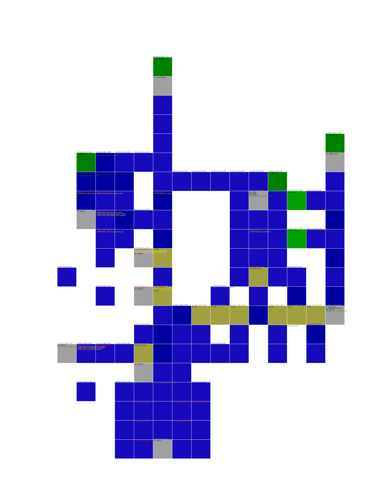
human_world_cursed_region
Item Memory used 16
Creatures score 2
0 100% 0x30 09_cocoon_plant pw1 1 1 1 1 1 1 1 a1 a1 m1
100% item_8f_hard_boots
100% item_e9_bracelet_of_movement
1 100% 0x30 09_cocoon_plant pw1 1 1 1 1 1 1 1 a1 a1 m1
2 100% 0x35 02_sand_leech_b pw1 1 1 1 1 1 1 1 a1 a1 m1
3 100% 0x35 02_sand_leech_b pw1 1 1 1 1 1 1 1 a1 a1 m1
100% item_ce_soul_ring
4 100% 0x30 01_shadow_spider pw57 78 28 62 70 73 66 40 a12 a13 m0
100% item_3a_giant_axe
5 100% 0x35 02_sand_leech_b pw1 1 1 1 1 1 1 1 a1 a1 m1
6 100% 0x35 02_sand_leech_b pw1 1 1 1 1 1 1 1 a1 a1 m1
7 100% 0x35 02_sand_leech_b pw1 1 1 1 1 1 1 1 a1 a1 m1
100% item_127_acid_vaccine
8 100% 0x35 02_sand_leech_b pw1 1 1 1 1 1 1 1 a1 a1 m1
100% item_3_long_sword
9 100% 0x30 05_warden pw1 1 1 1 1 1 1 1 a1 a1 m1
a 100% 0x30 05_warden pw1 1 1 1 1 1 1 1 a1 a1 m1
100% item_11e_anti_venom
b 100% 0x30 01_doriwi pw1 1 1 1 1 1 1 1 a1 a1 m1
100% item_35_morning_star
c 100% 0x30 01_doriwi pw1 1 1 1 1 1 1 1 a1 a1 m1
d 100% 0x30 09_shadow_spider pw57 78 28 62 70 73 66 40 a12 a13 m0
100% item_1_short_sword
e 100% 0x30 01_doriwi pw1 1 1 1 1 1 1 1 a1 a1 m1
100% item_a4_small_shield
f 100% 0x80 09_shadow_spider pw57 78 28 62 70 73 66 40 a12 a13 m0
100% item_10a_cune
10 100% 0x10 09_shadow_spider pw57 78 28 62 70 73 66 40 a12 a13 m0
100% item_11c_healing_potion
21 100% 0x50 0a_guardian_a pw80 42 103 89 110 93 72 36 a15 a16 m0
30 100% 0x30 04_fat_mole_a pw0 0 0 0 0 0 0 0 a0 a0 m0
0 item_11d_magic_potion
1 item_10c_torch
2 item_11c_healing_potion
3 item_130_blue_crystal
4 item_11d_magic_potion
5 item_12e_dorados_ashes
6 item_10a_cune
7 item_11c_healing_potion
Earth World
earth_world_rotting_cavern
Item Memory used 16
Creatures score 4
0 100% 0x30 0e_dinogon pw1 1 1 1 1 1 1 1 a1 a1 m1
100% item_11c_healing_potion
1 100% 0x20 01_earth_knight pw1 1 1 1 1 1 1 1 a1 a1 m1
100% item_11f_anti_paralytic
2 100% 0x20 01_earth_knight pw1 1 1 1 1 1 1 1 a1 a1 m1
100% item_10a_cune
3 100% 0x20 01_earth_knight pw1 1 1 1 1 1 1 1 a1 a1 m1
4 100% 0x30 05_cocoon_plant pw1 1 1 1 1 1 1 1 a1 a1 m1
100% item_127_acid_vaccine
5 100% 0x30 05_cocoon_plant pw1 1 1 1 1 1 1 1 a1 a1 m1
100% item_11d_magic_potion
6 100% 0x30 05_cocoon_plant pw1 1 1 1 1 1 1 1 a1 a1 m1
100% item_36_swift_morning_star
7 100% 0x20 01_earth_knight pw1 1 1 1 1 1 1 1 a1 a1 m1
100% item_125_dust_of_rage
8 100% 0x40 06_elder pw59 62 85 10 20 36 35 20 a14 a14 m0
9 100% 0x40 06_elder pw59 62 85 10 20 36 35 20 a14 a14 m0
100% item_11f_anti_paralytic
a 100% 0x35 04_minor_dwarf pw50 66 52 20 30 50 72 26 a12 a12 m0
100% item_10a_cune
b 100% 0x35 04_minor_dwarf pw50 66 52 20 30 50 72 26 a12 a12 m0
c 100% 0x35 04_minor_dwarf pw50 66 52 20 30 50 72 26 a12 a12 m0
100% item_91_steel_boots
d 100% 0x20 09_imp pw57 74 42 46 48 60 65 46 a10 a11 m0
e 100% 0x20 09_imp pw57 74 42 46 48 60 65 46 a10 a11 m0
100% item_12c_pitcher_of_nadya_hp
f 100% 0x20 09_imp pw57 74 42 46 48 60 65 46 a10 a11 m0
100% item_47_cap
10 100% 0x20 09_imp pw57 74 42 46 48 60 65 46 a10 a11 m0
100% item_11c_healing_potion
11 100% 0x20 09_imp pw57 74 42 46 48 60 65 46 a10 a11 m0
100% item_139_soul_pod_14_sp
12 100% 0x25 0d_tondrom pw1 1 1 1 1 1 1 1 a1 a1 m1
13 100% 0x25 0d_tondrom pw1 1 1 1 1 1 1 1 a1 a1 m1
14 100% 0x25 0d_tondrom pw1 1 1 1 1 1 1 1 a1 a1 m1
15 100% 0x10 0c_worm_face pw1 1 1 1 1 1 1 1 a1 a1 m1
16 100% 0x10 0c_worm_face pw1 1 1 1 1 1 1 1 a1 a1 m1
17 100% 0x10 0c_worm_face pw1 1 1 1 1 1 1 1 a1 a1 m1
18 100% 0x10 0c_worm_face pw1 1 1 1 1 1 1 1 a1 a1 m1
19 100% 0x20 0c_barrel_snail pw68 42 53 30 20 90 50 56 a8 a7 m0
1a 100% 0x20 0c_barrel_snail pw68 42 53 30 20 90 50 56 a8 a7 m0
1b 100% 0x60 0e_elder pw59 62 85 10 20 36 35 20 a14 a14 m0
1c 100% 0x30 0e_elder pw59 62 85 10 20 36 35 20 a14 a14 m0
1d 100% 0x30 0e_elder pw59 62 85 10 20 36 35 20 a14 a14 m0
1e 100% 0x30 0e_elder pw59 62 85 10 20 36 35 20 a14 a14 m0
20 100% 0x10 00_watcher_plant pw1 1 1 1 1 1 1 1 a1 a1 m1
30 100% 0x20 0a_blank pw0 0 0 0 0 0 0 0 a0 a0 m5
0 item_10e_sacred_feather
1 item_10e_sacred_feather
2 item_12f_spirit_key
3 item_10c_torch
4 item_120_divine_symbol
5 item_120_divine_symbol
6 item_11d_magic_potion
7 item_128_spirit_book
earth_world_poisonous_cavern
Item Memory used 16
Creatures score 60
0 100% 0x15 02_watcher_plant pw30 52 54 10 20 32 30 40 a12 a12 m0
1 100% 0x15 02_watcher_plant pw30 52 54 10 20 32 30 40 a12 a12 m0
2 100% 0x15 02_watcher_plant pw30 52 54 10 20 32 30 40 a12 a12 m0
3 100% 0x15 05_acid_pod pw1 1 1 1 1 1 1 1 a1 a1 m1
100% item_95_caustic_steel_boots
4 100% 0x15 05_acid_pod pw1 1 1 1 1 1 1 1 a1 a1 m1
100% item_10a_cune
5 100% 0x15 05_acid_pod pw1 1 1 1 1 1 1 1 a1 a1 m1
100% item_123_fire_world_stone
6 100% 0x15 05_acid_pod pw1 1 1 1 1 1 1 1 a1 a1 m1
100% item_12e_dorados_ashes
7 100% 0x15 02_watcher_plant pw30 52 54 10 20 32 30 40 a12 a12 m0
8 100% 0x15 02_watcher_plant pw30 52 54 10 20 32 30 40 a12 a12 m0
100% item_7c_wooden_glove
9 100% 0x15 02_watcher_plant pw30 52 54 10 20 32 30 40 a12 a12 m0
100% item_11c_healing_potion
a 100% 0x15 02_watcher_plant pw30 52 54 10 20 32 30 40 a12 a12 m0
100% item_14_crushing_broad_sword
b 100% 0x50 05_gargaral pw1 1 1 1 1 1 1 1 a1 a1 m1
100% item_11d_magic_potion
c 100% 0x60 05_gargaral pw1 1 1 1 1 1 1 1 a1 a1 m1
100% item_10a_cune
d 100% 0x40 0a_dark_bishop pw1 1 1 1 1 1 1 1 a1 a1 m1
100% item_a1_buckler
e 100% 0x40 0a_dark_bishop pw1 1 1 1 1 1 1 1 a1 a1 m1
100% item_12e_dorados_ashes
f 100% 0x40 0a_dark_bishop pw1 1 1 1 1 1 1 1 a1 a1 m1
100% item_10a_cune
10 100% 0x15 0c_hanging_dead pw50 32 63 10 42 30 35 32 a5 a5 m0
100% item_124_poison_vaccine
11 100% 0x15 0c_hanging_dead pw50 32 63 10 42 30 35 32 a5 a5 m0
12 100% 0x15 0c_hanging_dead pw50 32 63 10 42 30 35 32 a5 a5 m0
13 100% 0x15 0c_hanging_dead pw50 32 63 10 42 30 35 32 a5 a5 m0
14 100% 0x15 0c_hanging_dead pw50 32 63 10 42 30 35 32 a5 a5 m0
15 100% 0x15 0c_hanging_dead pw50 32 63 10 42 30 35 32 a5 a5 m0
16 100% 0x20 0a_cocoon_plant pw1 1 1 1 1 1 1 1 a1 a1 m1
17 100% 0x20 0a_cocoon_plant pw1 1 1 1 1 1 1 1 a1 a1 m1
18 100% 0x20 0a_cocoon_plant pw1 1 1 1 1 1 1 1 a1 a1 m1
19 100% 0x30 0d_trickster pw78 105 54 86 72 46 90 46 a15 a18 m0
1a 100% 0x30 0d_trickster pw78 105 54 86 72 46 90 46 a15 a18 m0
1b 100% 0x30 0d_trickster pw78 105 54 86 72 46 90 46 a15 a18 m0
1d 100% 0x20 02_watcher_plant pw30 52 54 10 20 32 30 40 a12 a12 m0
1e 100% 0x30 0d_trickster pw78 105 54 86 72 46 90 46 a15 a18 m0
1f 100% 0x30 0d_trickster pw78 105 54 86 72 46 90 46 a15 a18 m0
20 100% 0x10 00_duhrin pw65 124 92 80 70 86 58 30 a0 a0 m8
30 100% 0x20 05_blank pw0 0 0 0 0 0 0 0 a0 a0 m0
31 100% 0x70 04_auriel_b pw150 160 150 65 65 65 65 65 a75 a70 m9
32 100% 0x50 0b_blank pw0 0 0 0 0 0 0 0 a0 a0 m0
33 100% 0x50 0a_blank pw0 0 0 0 0 0 0 0 a0 a0 m7
0 item_127_acid_vaccine
1 item_10a_cune
2 item_126_bottle_of_light
3 item_51_full_helm
5 item_a2_buckler
6 item_49_crown_of_resist
7 item_11f_anti_paralytic
8 item_11c_healing_potion
a item_126_bottle_of_light
b item_12e_dorados_ashes
1c item_10a_cune
1d item_120_divine_symbol
earth_world_stone_cavern
Item Memory used 16
Creatures score 53
0 100% 0x60 01_demon_bat pw50 68 46 63 80 48 46 83 a14 a20 m0
1 100% 0x50 01_demon_bat pw50 68 46 63 80 48 46 83 a14 a20 m0
2 100% 0x50 01_demon_bat pw50 68 46 63 80 48 46 83 a14 a20 m0
100% item_127_acid_vaccine
3 100% 0x30 05_hobble_worm pw60 85 55 46 45 36 25 46 a25 a20 m0
4 100% 0x30 05_hobble_worm pw60 85 55 46 45 36 25 46 a25 a20 m0
100% item_5e_leather_armor
5 100% 0x30 05_hobble_worm pw60 85 55 46 45 36 25 46 a25 a20 m0
100% item_11c_healing_potion
6 100% 0x30 05_hobble_worm pw60 85 55 46 45 36 25 46 a25 a20 m0
100% item_10a_cune
7 100% 0x30 05_hobble_worm pw60 85 55 46 45 36 25 46 a25 a20 m0
8 100% 0x30 05_hobble_worm pw60 85 55 46 45 36 25 46 a25 a20 m0
9 100% 0x30 05_hobble_worm pw60 85 55 46 45 36 25 46 a25 a20 m0
a 100% 0x40 0a_barrel_snail pw80 70 110 50 60 95 82 70 a23 a20 m0
100% item_120_divine_symbol
b 100% 0x40 0a_barrel_snail pw80 70 110 50 60 95 82 70 a23 a20 m0
100% item_42_bow
c 100% 0x25 08_clay_servant pw132 138 75 40 50 70 48 72 a27 a26 m0
d 100% 0x25 08_clay_servant pw132 138 75 40 50 70 48 72 a27 a26 m0
100% item_4b_wizard_crown
e 100% 0x25 08_clay_servant pw132 138 75 40 50 70 48 72 a27 a26 m0
100% item_124_poison_vaccine
f 100% 0x25 08_clay_servant pw132 138 75 40 50 70 48 72 a27 a26 m0
10 100% 0x40 0a_barrel_snail pw80 70 110 50 60 95 82 70 a23 a20 m0
11 100% 0x40 0a_barrel_snail pw80 70 110 50 60 95 82 70 a23 a20 m0
100% item_127_acid_vaccine
12 100% 0x40 0a_barrel_snail pw80 70 110 50 60 95 82 70 a23 a20 m0
13 100% 0x25 0c_dybbuk pw65 60 42 80 80 78 76 68 a12 a14 m10
100% item_112_key_of_knowledge
14 100% 0x20 06_skeleton pw1 1 1 1 1 1 1 1 a1 a1 m1
15 100% 0x20 06_skeleton pw1 1 1 1 1 1 1 1 a1 a1 m1
100% item_10a_cune
16 100% 0x20 06_skeleton pw1 1 1 1 1 1 1 1 a1 a1 m1
17 100% 0x80 06_skeleton pw1 1 1 1 1 1 1 1 a1 a1 m1
100% item_79_leather_glove
30 100% 0x50 00_dybbuk pw60 70 40 80 80 78 76 68 a12 a14 m10
31 100% 0x0 04_dybbuk pw60 70 40 80 80 78 76 68 a12 a14 m10
32 100% 0x0 04_dybbuk pw60 70 40 80 80 78 76 68 a12 a14 m10
0 item_122_evil_eye
1 item_11c_healing_potion
2 item_93_steel_boots_of_curing
3 item_9f_caustic_leg_guard
4 item_11c_healing_potion
5 item_12e_dorados_ashes
6 item_138_soul_pod_29_sp
7 item_11d_magic_potion

earth_world_quaking_cavern
Item Memory used 16
Creatures score 1
0 100% 0x30 01_blood_slime pw1 1 1 1 1 1 1 1 a1 a1 m1
100% item_5f_magical_leather_armor
1 100% 0x30 01_blood_slime pw1 1 1 1 1 1 1 1 a1 a1 m1
2 100% 0x30 01_blood_slime pw1 1 1 1 1 1 1 1 a1 a1 m1
100% item_10e_sacred_feather
3 100% 0x30 01_blood_slime pw1 1 1 1 1 1 1 1 a1 a1 m1
100% item_83_gauntlet
4 100% 0x30 01_blood_slime pw1 1 1 1 1 1 1 1 a1 a1 m1
100% item_33_crushing_mace
5 100% 0x30 01_blood_slime pw1 1 1 1 1 1 1 1 a1 a1 m1
100% item_a9_large_shield_of_balance
6 100% 0x60 08_wyvern pw1 1 1 1 1 1 1 1 a1 a1 m1
100% item_60_scale_mail
7 100% 0x10 08_wyvern pw1 1 1 1 1 1 1 1 a1 a1 m1
100% item_136_soul_pod_5_sp
8 100% 0x10 08_wyvern pw1 1 1 1 1 1 1 1 a1 a1 m1
100% item_10a_cune
9 100% 0x10 08_wyvern pw1 1 1 1 1 1 1 1 a1 a1 m1
100% item_39_axe
a 100% 0x10 08_wyvern pw1 1 1 1 1 1 1 1 a1 a1 m1
b 100% 0x90 00_acid_slime pw1 1 1 1 1 1 1 1 a1 a1 m1
c 100% 0x35 02_skeleton pw1 1 1 1 1 1 1 1 a1 a1 m1
d 100% 0x35 02_skeleton pw1 1 1 1 1 1 1 1 a1 a1 m1
e 100% 0x35 02_skeleton pw1 1 1 1 1 1 1 1 a1 a1 m1
f 100% 0x30 00_acid_slime pw1 1 1 1 1 1 1 1 a1 a1 m1
10 100% 0x30 00_acid_slime pw1 1 1 1 1 1 1 1 a1 a1 m1
11 100% 0x30 00_acid_slime pw1 1 1 1 1 1 1 1 a1 a1 m1
12 100% 0x30 08_ring_demon pw1 1 1 1 1 1 1 1 a1 a1 m1
13 100% 0x30 08_ring_demon pw1 1 1 1 1 1 1 1 a1 a1 m1
14 100% 0x30 08_ring_demon pw1 1 1 1 1 1 1 1 a1 a1 m1
15 100% 0x30 08_ring_demon pw1 1 1 1 1 1 1 1 a1 a1 m1
16 100% 0x40 0d_damned_angel pw1 1 1 1 1 1 1 1 a1 a1 m1
17 100% 0x40 0d_damned_angel pw1 1 1 1 1 1 1 1 a1 a1 m1
18 100% 0x40 0d_damned_angel pw1 1 1 1 1 1 1 1 a1 a1 m1
20 100% 0x10 00_dark_spider pw1 1 1 1 1 1 1 1 a1 a1 m1
21 100% 0x10 00_dark_spider pw1 1 1 1 1 1 1 1 a1 a1 m1
22 100% 0x10 00_dark_spider pw1 1 1 1 1 1 1 1 a1 a1 m1
0 item_ea_bracelet_of_composure
1 item_127_acid_vaccine
2 item_11c_healing_potion
3 item_124_poison_vaccine
4 item_6_keenest_long_sword
5 item_11c_healing_potion
6 item_11c_healing_potion
7 item_11c_healing_potion
8 item_128_spirit_book
9 item_8e_leather_boots
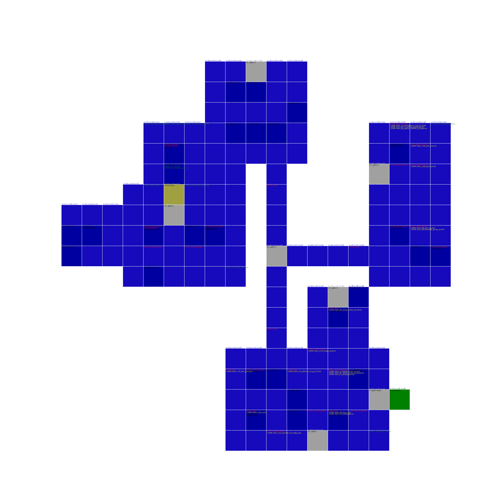
earth_world_false_pit_cavern
Item Memory used 16
Creatures score 69
0 100% 0x50 00_earth_knight pw78 76 72 140 70 56 156 65 a30 a26 m0
100% item_12e_dorados_ashes
1 100% 0x50 04_great_frog pw1 1 1 1 1 1 1 1 a1 a1 m1
100% item_92_steel_boots_of_resist
2 100% 0x10 04_great_frog pw1 1 1 1 1 1 1 1 a1 a1 m1
100% item_12b_pitcher_of_nadya
3 100% 0x10 04_great_frog pw1 1 1 1 1 1 1 1 a1 a1 m1
4 100% 0x10 04_great_frog pw1 1 1 1 1 1 1 1 a1 a1 m1
100% item_131_flaming_key
5 100% 0x10 04_great_frog pw1 1 1 1 1 1 1 1 a1 a1 m1
100% item_8_silent_sword
6 100% 0x10 08_star_serpent pw1 1 1 1 1 1 1 1 a1 a1 m1
100% item_a3_small_shield
7 100% 0x10 08_star_serpent pw1 1 1 1 1 1 1 1 a1 a1 m1
8 100% 0x10 08_star_serpent pw1 1 1 1 1 1 1 1 a1 a1 m1
9 100% 0x20 04_cannon_snail pw62 100 51 41 45 46 95 75 a20 a17 m0
100% item_10a_cune
a 100% 0x20 04_cannon_snail pw62 100 51 41 45 46 95 75 a20 a17 m0
b 100% 0x30 08_guardian_b pw60 42 125 62 178 179 124 63 a15 a16 m0
c 100% 0x30 08_guardian_b pw60 42 125 62 178 179 124 63 a15 a16 m0
100% item_10_broad_sword
d 100% 0x20 02_horned_slime pw1 1 1 1 1 1 1 1 a1 a1 m1
e 100% 0x20 02_horned_slime pw1 1 1 1 1 1 1 1 a1 a1 m1
f 100% 0x20 02_horned_slime pw1 1 1 1 1 1 1 1 a1 a1 m1
10 100% 0x20 02_horned_slime pw1 1 1 1 1 1 1 1 a1 a1 m1
11 100% 0x50 01_horned_skull pw1 1 1 1 1 1 1 1 a1 a1 m1
12 100% 0x50 0e_watcher_plant pw1 1 1 1 1 1 1 1 a1 a1 m1
13 100% 0x10 0e_watcher_plant pw1 1 1 1 1 1 1 1 a1 a1 m1
14 100% 0x10 0e_watcher_plant pw1 1 1 1 1 1 1 1 a1 a1 m1
15 100% 0x10 0e_watcher_plant pw1 1 1 1 1 1 1 1 a1 a1 m1
16 100% 0x10 0e_watcher_plant pw1 1 1 1 1 1 1 1 a1 a1 m1
0 item_11c_healing_potion
1 item_127_acid_vaccine
2 item_11c_healing_potion
3 item_10a_cune
4 item_120_divine_symbol
5 item_127_acid_vaccine
6 item_10d_lamp
7 item_12e_dorados_ashes
8 item_11d_magic_potion
9 item_11c_healing_potion
a item_9a_leg_guard
b item_11c_healing_potion
c item_137_soul_pod_53_sp
d item_124_poison_vaccine
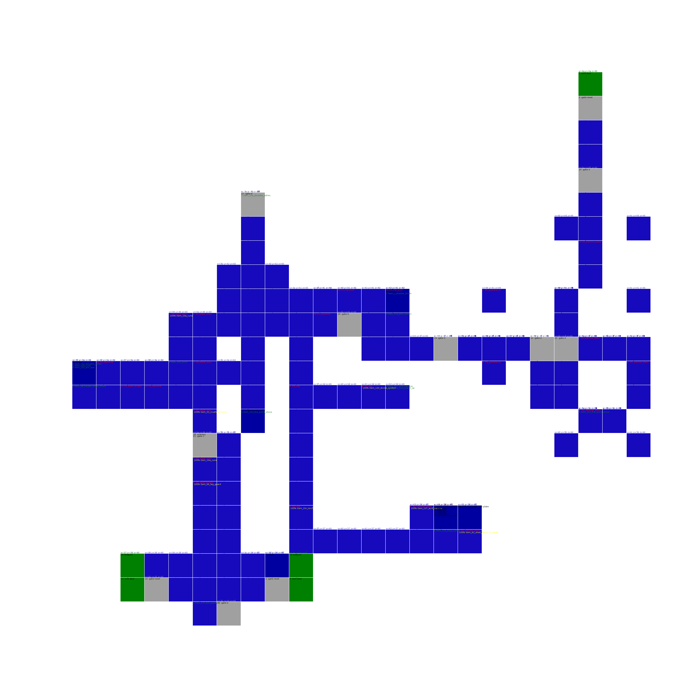
earth_world_hostile_rock_cavern
Item Memory used 10
Creatures score 2
0 100% 0x30 09_iron_crusher pw1 1 1 1 1 1 1 1 a1 a1 m1
100% item_11e_anti_venom
1 100% 0x30 09_iron_crusher pw1 1 1 1 1 1 1 1 a1 a1 m1
100% item_10a_cune
2 100% 0x30 09_iron_crusher pw1 1 1 1 1 1 1 1 a1 a1 m1
3 100% 0x30 09_iron_crusher pw1 1 1 1 1 1 1 1 a1 a1 m1
100% item_a5_shield_of_resist
4 100% 0x60 05_earth_knight pw78 76 72 140 70 56 156 65 a30 a26 m0
100% item_11c_healing_potion
5 100% 0x60 05_earth_knight pw78 76 72 140 70 56 156 65 a30 a26 m0
100% item_110_fiery_key
6 100% 0x30 05_dwarfling pw1 1 1 1 1 1 1 1 a1 a1 m1
7 100% 0x30 05_dwarfling pw1 1 1 1 1 1 1 1 a1 a1 m1
100% item_82_caustic_hand_guard
8 100% 0x30 05_dwarfling pw1 1 1 1 1 1 1 1 a1 a1 m1
9 100% 0x30 05_dwarfling pw1 1 1 1 1 1 1 1 a1 a1 m1
100% item_11f_anti_paralytic
a 100% 0x30 05_dwarfling pw1 1 1 1 1 1 1 1 a1 a1 m1
100% item_11c_healing_potion
21 100% 0x10 04_dread_knight pw115 100 85 102 150 130 128 95 a45 a40 m11
0 item_11c_healing_potion
1 item_11f_anti_paralytic
2 item_125_dust_of_rage
3 item_62_scale_mail_of_curing
4 item_b4_harden_tower_shield
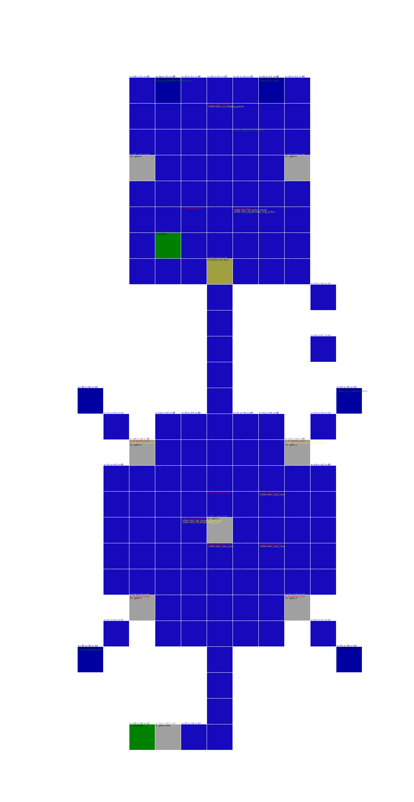
Fire World
fire_world_burning_cavern
Item Memory used 16
Creatures score 87
0 100% 0x30 0a_warpoor pw1 1 1 1 1 1 1 1 a1 a1 m1
100% item_125_dust_of_rage
1 100% 0x30 0a_warpoor pw1 1 1 1 1 1 1 1 a1 a1 m1
100% item_11f_anti_paralytic
2 100% 0x50 0a_warpoor pw1 1 1 1 1 1 1 1 a1 a1 m1
100% item_10a_cune
3 100% 0x30 0a_warpoor pw1 1 1 1 1 1 1 1 a1 a1 m1
100% item_11c_healing_potion
4 100% 0x30 0a_warpoor pw1 1 1 1 1 1 1 1 a1 a1 m1
100% item_b1_tower_shield
5 100% 0x30 0a_warpoor pw1 1 1 1 1 1 1 1 a1 a1 m1
6 100% 0x80 0d_blood_bone pw1 1 1 1 1 1 1 1 a1 a1 m1
100% item_ca_summoner_ring_of_frost
7 100% 0x30 0d_blood_bone pw1 1 1 1 1 1 1 1 a1 a1 m1
100% item_117_brass_key
8 100% 0x30 0d_blood_bone pw1 1 1 1 1 1 1 1 a1 a1 m1
100% item_10a_cune
9 100% 0x50 0c_gaze_hopper pw1 1 1 1 1 1 1 1 a1 a1 m1
100% item_114_floodgate_key
a 100% 0x60 0d_blood_bone pw1 1 1 1 1 1 1 1 a1 a1 m1
b 100% 0x60 0d_blood_bone pw1 1 1 1 1 1 1 1 a1 a1 m1
c 100% 0x60 0d_blood_bone pw1 1 1 1 1 1 1 1 a1 a1 m1
100% item_11e_anti_venom
d 100% 0x60 0d_blood_bone pw1 1 1 1 1 1 1 1 a1 a1 m1
100% item_ec_bracelet_of_recovery
e 100% 0x60 06_fire_jinn pw1 1 1 1 1 1 1 1 a1 a1 m1
100% item_cb_balance_ring_of_frost
f 100% 0x60 06_fire_jinn pw1 1 1 1 1 1 1 1 a1 a1 m1
100% item_84_gauntlet
10 100% 0x60 06_hell_warrior pw1 1 1 1 1 1 1 1 a1 a1 m1
11 100% 0x90 06_fire_jinn pw1 1 1 1 1 1 1 1 a1 a1 m1
100% item_5b_quilted_armor
12 100% 0x90 06_fire_jinn pw1 1 1 1 1 1 1 1 a1 a1 m1
13 100% 0x40 09_cross_breed pw1 1 1 1 1 1 1 1 a1 a1 m1
100% item_139_soul_pod_14_sp
14 100% 0x40 09_cross_breed pw1 1 1 1 1 1 1 1 a1 a1 m1
15 100% 0x30 09_cross_breed pw1 1 1 1 1 1 1 1 a1 a1 m1
16 100% 0x40 0a_skeleton pw1 1 1 1 1 1 1 1 a1 a1 m1
17 100% 0x40 0a_skeleton pw1 1 1 1 1 1 1 1 a1 a1 m1
18 100% 0x40 0a_skeleton pw1 1 1 1 1 1 1 1 a1 a1 m1
19 100% 0x40 0a_skeleton pw1 1 1 1 1 1 1 1 a1 a1 m1
1a 100% 0x30 09_cross_breed pw1 1 1 1 1 1 1 1 a1 a1 m1
0 item_125_dust_of_rage
1 item_10e_sacred_feather
2 item_10c_torch
3 item_126_bottle_of_light
4 item_10a_cune
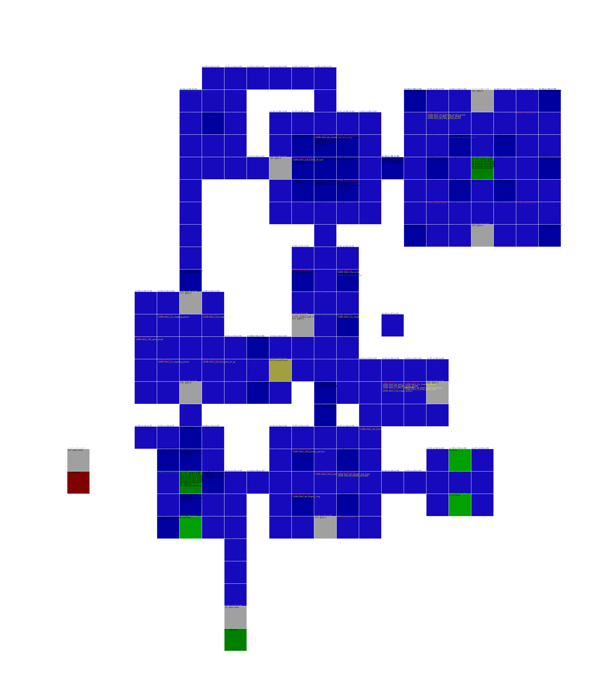
fire_world_molten_cavern
Item Memory used 16
Creatures score 108
0 100% 0x20 02_karasu pw1 1 1 1 1 1 1 1 a1 a1 m1
100% item_67_plate_mail_of_curing
1 100% 0x30 02_karasu pw1 1 1 1 1 1 1 1 a1 a1 m1
100% item_11c_healing_potion
2 100% 0x30 02_karasu pw1 1 1 1 1 1 1 1 a1 a1 m1
100% item_11c_healing_potion
3 100% 0x60 02_karasu pw1 1 1 1 1 1 1 1 a1 a1 m1
100% item_37_frosty_morning_star
4 100% 0x30 02_karasu pw1 1 1 1 1 1 1 1 a1 a1 m1
100% item_11c_healing_potion
5 100% 0x30 02_karasu pw1 1 1 1 1 1 1 1 a1 a1 m1
6 100% 0x20 06_skeleton pw1 1 1 1 1 1 1 1 a1 a1 m1
100% item_136_soul_pod_5_sp
7 100% 0x20 06_skeleton pw1 1 1 1 1 1 1 1 a1 a1 m1
100% item_10a_cune
8 100% 0x20 06_skeleton pw1 1 1 1 1 1 1 1 a1 a1 m1
9 100% 0x60 01_chirper pw1 1 1 1 1 1 1 1 a1 a1 m1
a 100% 0x60 01_chirper pw1 1 1 1 1 1 1 1 a1 a1 m1
100% item_61_scale_mail
b 100% 0x60 01_chirper pw1 1 1 1 1 1 1 1 a1 a1 m1
100% item_10a_cune
c 100% 0x60 01_chirper pw1 1 1 1 1 1 1 1 a1 a1 m1
d 100% 0x60 01_chirper pw1 1 1 1 1 1 1 1 a1 a1 m1
100% item_11f_anti_paralytic
e 100% 0x30 00_hell_hunter pw1 1 1 1 1 1 1 1 a1 a1 m1
f 100% 0x30 00_hell_hunter pw1 1 1 1 1 1 1 1 a1 a1 m1
10 100% 0x30 00_hell_hunter pw1 1 1 1 1 1 1 1 a1 a1 m1
100% item_11f_anti_paralytic
11 100% 0x30 04_tree_ogre pw1 1 1 1 1 1 1 1 a1 a1 m1
100% item_11c_healing_potion
12 100% 0x30 04_tree_ogre pw1 1 1 1 1 1 1 1 a1 a1 m1
100% item_b6_caustic_tower_shield
13 100% 0x30 04_tree_ogre pw1 1 1 1 1 1 1 1 a1 a1 m1
100% item_10a_cune
14 100% 0x30 04_tree_ogre pw1 1 1 1 1 1 1 1 a1 a1 m1
15 100% 0x30 04_tree_ogre pw1 1 1 1 1 1 1 1 a1 a1 m1
100% item_81_fiery_gauntlet
16 100% 0x30 04_tree_ogre pw1 1 1 1 1 1 1 1 a1 a1 m1
21 100% 0x10 02_dead_abraxus pw185 185 185 200 40 120 130 140 a80 a90 m12
30 100% 0x10 00_abraxus pw85 85 85 600 10 100 100 100 a80 a90 m12
31 100% 0x5 0c_fat_mole_c pw0 0 0 0 0 0 0 0 a0 a0 m13
32 100% 0x5 08_fat_mole_b pw0 0 0 0 0 0 0 0 a0 a0 m13
0 item_56_great_helm
1 item_f2_priest_bracelet
2 item_12e_dorados_ashes
3 item_11d_magic_potion
4 item_123_fire_world_stone
5 item_126_bottle_of_light
6 item_138_soul_pod_29_sp
7 item_10e_sacred_feather
fire_world_phoenix_cave
Item Memory used 16
Creatures score 68
0 100% 0x80 08_oxelus pw1 1 1 1 1 1 1 1 a1 a1 m1
1 100% 0x40 08_oxelus pw1 1 1 1 1 1 1 1 a1 a1 m1
2 100% 0x40 08_oxelus pw1 1 1 1 1 1 1 1 a1 a1 m1
3 100% 0x80 08_oxelus pw1 1 1 1 1 1 1 1 a1 a1 m1
100% item_12e_dorados_ashes
4 100% 0x80 08_oxelus pw1 1 1 1 1 1 1 1 a1 a1 m1
100% item_11f_anti_paralytic
5 100% 0x40 08_oxelus pw1 1 1 1 1 1 1 1 a1 a1 m1
100% item_c7_priest_ring_of_fire
6 100% 0x80 04_zygote pw1 1 1 1 1 1 1 1 a1 a1 m1
7 100% 0x40 04_zygote pw1 1 1 1 1 1 1 1 a1 a1 m1
100% item_12e_dorados_ashes
8 100% 0x40 04_zygote pw1 1 1 1 1 1 1 1 a1 a1 m1
100% item_11c_healing_potion
9 100% 0x40 04_zygote pw1 1 1 1 1 1 1 1 a1 a1 m1
100% item_127_acid_vaccine
a 100% 0x80 05_armored_jinn pw100 95 75 3000 54 140 158 156 a25 a25 m0
b 100% 0x80 05_armored_jinn pw100 95 75 3000 54 140 158 156 a25 a25 m0
100% item_10a_cune
c 100% 0x40 05_armored_jinn pw100 95 75 3000 54 140 158 156 a25 a25 m0
100% item_3d_deadly_axe
d 100% 0x40 04_zygote pw1 1 1 1 1 1 1 1 a1 a1 m1
e 100% 0x80 05_armored_jinn pw100 95 75 3000 54 140 158 156 a25 a25 m0
100% item_6b_frosty_plate_mail
f 100% 0x40 04_berzerker pw1 1 1 1 1 1 1 1 a1 a1 m1
100% item_125_dust_of_rage
10 100% 0x80 04_zygote pw1 1 1 1 1 1 1 1 a1 a1 m1
11 100% 0x40 04_zygote pw1 1 1 1 1 1 1 1 a1 a1 m1
12 100% 0x40 04_zygote pw1 1 1 1 1 1 1 1 a1 a1 m1
13 100% 0x80 04_zygote pw1 1 1 1 1 1 1 1 a1 a1 m1
14 100% 0x80 04_zygote pw1 1 1 1 1 1 1 1 a1 a1 m1
0 item_11d_magic_potion
1 item_10a_cune
2 item_10a_cune
3 item_11d_magic_potion
4 item_10a_cune
5 item_1f_frosty_bastard_sword
6 item_128_spirit_book
7 item_9e_leg_guard_of_protect
8 item_10a_cune
9 item_11c_healing_potion
a item_10a_cune
b item_10a_cune
c item_f1_sorcerer_bracelet
d item_120_divine_symbol
e item_122_evil_eye
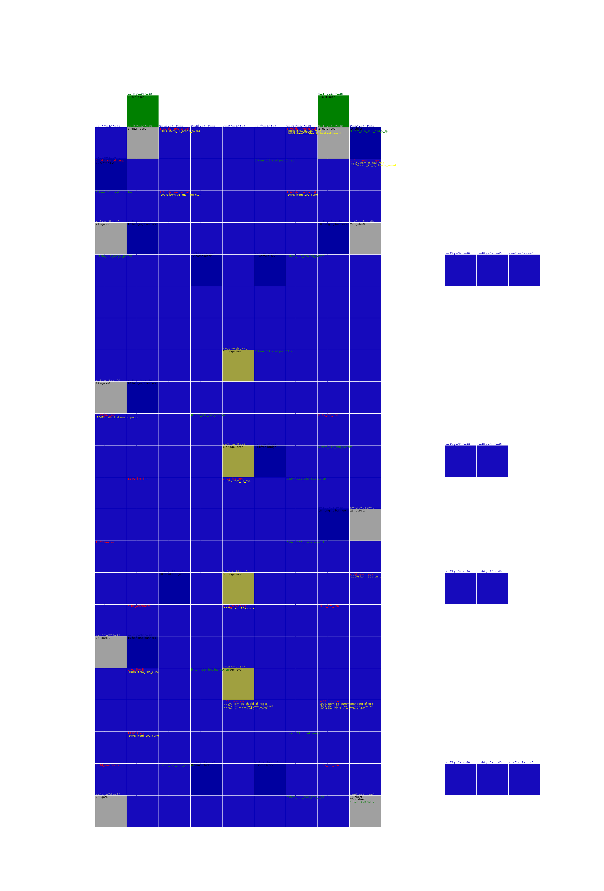
fire_world_ashen_cavern
Item Memory used 16
Creatures score 159
0 100% 0x50 01_berzerker pw65 45 108 500 20 72 68 78 a35 a28 m0
100% item_ed_mind_bracelet
1 100% 0x50 01_berzerker pw65 45 108 500 20 72 68 78 a35 a28 m0
100% item_4d_helm
2 100% 0x50 01_berzerker pw65 45 108 500 20 72 68 78 a35 a28 m0
100% item_4f_magical_helm
3 100% 0x50 00_dark_spirits pw1 1 1 1 1 1 1 1 a1 a1 m1
4 100% 0x50 00_dark_spirits pw1 1 1 1 1 1 1 1 a1 a1 m1
100% item_69_magical_plate_mail
5 100% 0x50 01_berzerker pw65 45 108 500 20 72 68 78 a35 a28 m0
100% item_12e_dorados_ashes
6 100% 0x50 01_berzerker pw65 45 108 500 20 72 68 78 a35 a28 m0
100% item_6f_plate_mail_of_protect
7 100% 0x50 01_berzerker pw65 45 108 500 20 72 68 78 a35 a28 m0
100% item_e7_bracelet_of_resist
8 100% 0x50 00_dark_spirits pw1 1 1 1 1 1 1 1 a1 a1 m1
100% item_d_shadow_wolf
9 100% 0x50 0d_death_serpent pw1 1 1 1 1 1 1 1 a1 a1 m1
100% item_6c_caustic_plate_mail
a 100% 0x50 0d_death_serpent pw1 1 1 1 1 1 1 1 a1 a1 m1
b 100% 0x50 0d_death_serpent pw1 1 1 1 1 1 1 1 a1 a1 m1
100% item_c9_summoner_ring_of_frost
c 100% 0x5 08_torg pw1 1 1 1 1 1 1 1 a1 a1 m1
100% item_11d_magic_potion
d 100% 0x50 01_blood_skull pw1 1 1 1 1 1 1 1 a1 a1 m1
100% item_10c_torch
e 100% 0x50 01_blood_skull pw1 1 1 1 1 1 1 1 a1 a1 m1
100% item_90_steel_boots
f 100% 0x50 01_blood_skull pw1 1 1 1 1 1 1 1 a1 a1 m1
100% item_120_divine_symbol
10 100% 0x50 0d_death_serpent pw1 1 1 1 1 1 1 1 a1 a1 m1
11 100% 0x50 0d_death_serpent pw1 1 1 1 1 1 1 1 a1 a1 m1
100% item_11c_healing_potion
12 100% 0x50 0a_ruby_demon pw70 40 90 30000 20 48 39 50 a34 a27 m0
100% item_120_divine_symbol
13 100% 0x50 0a_ruby_demon pw70 40 90 30000 20 48 39 50 a34 a27 m0
14 100% 0x50 09_cerberus pw65 85 30 65535 44 85 70 39 a30 a30 m0
100% item_126_bottle_of_light
15 100% 0x50 09_cerberus pw65 85 30 65535 44 85 70 39 a30 a30 m0
100% item_3f_battle_axe
16 100% 0x50 09_cerberus pw65 85 30 65535 44 85 70 39 a30 a30 m0
17 100% 0x50 09_cerberus pw65 85 30 65535 44 85 70 39 a30 a30 m0
20 100% 0x100 0c_ebony_knight pw97 125 127 9999 75 109 179 198 a70 a50 m14
0 item_10a_cune
1 item_11c_healing_potion
2 item_2c_deadly_great_sword
3 item_11c_healing_potion
4 item_e1_ring_of_dark_souls
6 item_11c_healing_potion
7 item_122_evil_eye
Water World
water_world_impure_pool_area
Item Memory used 16
Creatures score 324
0 100% 0x30 01_horned_slime pw80 78 43 25 89 72 111 78 a14 a14 m0
100% item_11c_healing_potion
1 100% 0x30 01_horned_slime pw80 78 43 25 89 72 111 78 a14 a14 m0
100% item_128_spirit_book
2 100% 0x30 01_horned_slime pw80 78 43 25 89 72 111 78 a14 a14 m0
3 100% 0x30 01_horned_slime pw80 78 43 25 89 72 111 78 a14 a14 m0
100% item_64_plate_mail
4 100% 0x30 01_horned_slime pw80 78 43 25 89 72 111 78 a14 a14 m0
100% item_a_rapier
5 100% 0x15 09_armored_warrior pw1 1 1 1 1 1 1 1 a1 a1 m1
100% item_128_spirit_book
6 100% 0x30 09_armored_warrior pw1 1 1 1 1 1 1 1 a1 a1 m1
100% item_11d_magic_potion
7 100% 0x30 09_armored_warrior pw1 1 1 1 1 1 1 1 a1 a1 m1
8 100% 0x30 09_armored_warrior pw1 1 1 1 1 1 1 1 a1 a1 m1
100% item_136_soul_pod_5_sp
9 100% 0x30 09_armored_warrior pw1 1 1 1 1 1 1 1 a1 a1 m1
100% item_f_broad_sword
a 100% 0x30 09_sloth_bug pw1 1 1 1 1 1 1 1 a1 a1 m1
100% item_10a_cune
b 100% 0x30 09_sloth_bug pw1 1 1 1 1 1 1 1 a1 a1 m1
100% item_5d_leather_armor
c 100% 0x30 05_blood_brain pw1 1 1 1 1 1 1 1 a1 a1 m1
d 100% 0x30 09_sloth_bug pw1 1 1 1 1 1 1 1 a1 a1 m1
100% item_11f_anti_paralytic
e 100% 0x30 09_sloth_bug pw1 1 1 1 1 1 1 1 a1 a1 m1
100% item_11d_magic_potion
f 100% 0x30 05_blood_brain pw1 1 1 1 1 1 1 1 a1 a1 m1
100% item_fd_amulet_of_guardian
10 100% 0x30 00_winged_worm pw1 1 1 1 1 1 1 1 a1 a1 m1
11 100% 0x30 00_winged_worm pw1 1 1 1 1 1 1 1 a1 a1 m1
12 100% 0x30 00_winged_worm pw1 1 1 1 1 1 1 1 a1 a1 m1
13 100% 0x50 0d_cocoon_plant pw1 1 1 1 1 1 1 1 a1 a1 m1
14 100% 0x50 0d_cocoon_plant pw1 1 1 1 1 1 1 1 a1 a1 m1
15 100% 0x40 01_beak_plant pw1 1 1 1 1 1 1 1 a1 a1 m1
16 100% 0x40 01_beak_plant pw1 1 1 1 1 1 1 1 a1 a1 m1
17 100% 0x30 0d_hatchlin pw118 62 9 30000 30000 30000 30000 30000 a20 a20 m0
18 100% 0x40 01_beak_plant pw1 1 1 1 1 1 1 1 a1 a1 m1
19 100% 0x40 01_beak_plant pw1 1 1 1 1 1 1 1 a1 a1 m1
1a 100% 0x40 01_beak_plant pw1 1 1 1 1 1 1 1 a1 a1 m1
1b 100% 0x40 01_beak_plant pw1 1 1 1 1 1 1 1 a1 a1 m1
1c 100% 0x40 01_beak_plant pw1 1 1 1 1 1 1 1 a1 a1 m1
30 100% 0x5 00_fat_mole_f pw0 0 0 0 0 0 0 0 a0 a0 m24
31 100% 0x5 04_blank pw90 90 90 90 90 90 90 90 a0 a0 m25
0 item_10e_sacred_feather
1 item_38_axe
2 item_10c_torch
3 item_12e_dorados_ashes
4 item_10a_cune
5 item_129_sealed_sword_stone
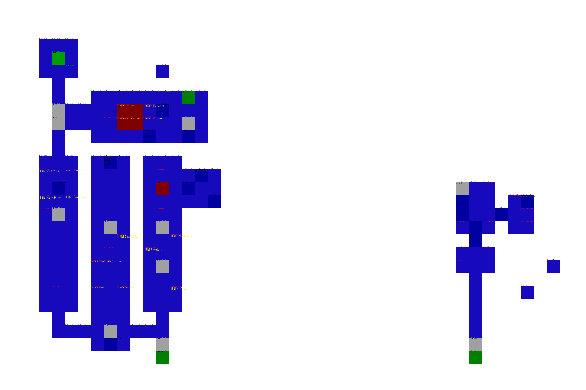
water_world_sunken_river_area
Item Memory used 14
Creatures score 3
0 100% 0x50 0d_bugler pw1 1 1 1 1 1 1 1 a1 a1 m1
100% item_126_bottle_of_light
1 100% 0x50 0d_bugler pw1 1 1 1 1 1 1 1 a1 a1 m1
100% item_111_kings_key
2 100% 0x50 0d_bugler pw1 1 1 1 1 1 1 1 a1 a1 m1
100% item_116_key_of_delusion
3 100% 0x40 05_blood_slime pw1 1 1 1 1 1 1 1 a1 a1 m1
100% item_101_amulet_of_resist
4 100% 0x70 05_blood_slime pw1 1 1 1 1 1 1 1 a1 a1 m1
100% item_ff_amulet_of_composure
5 100% 0x40 04_kabasaur pw77 90 75 49 95 79 130 85 a40 a34 m0
100% item_b2_tower_shield
6 100% 0x40 04_kabasaur pw77 90 75 49 95 79 130 85 a40 a34 m0
100% item_10a_cune
7 100% 0x40 04_kabasaur pw77 90 75 49 95 79 130 85 a40 a34 m0
100% item_10a_cune
8 100% 0x40 04_kabasaur pw77 90 75 49 95 79 130 85 a40 a34 m0
100% item_19_bastard_sword
100% item_b3_tower_shield_of_honor
9 100% 0x40 04_kabasaur pw77 90 75 49 95 79 130 85 a40 a34 m0
100% item_11c_healing_potion
a 100% 0x40 05_blood_slime pw1 1 1 1 1 1 1 1 a1 a1 m1
b 100% 0x40 05_blood_slime pw1 1 1 1 1 1 1 1 a1 a1 m1
100% item_c5_summoner_ring_of_fire
c 100% 0x40 05_blood_slime pw1 1 1 1 1 1 1 1 a1 a1 m1
0 item_12e_dorados_ashes
1 item_11e_anti_venom
2 item_127_acid_vaccine
3 item_cd_sorcerer_ring_of_frost
4 item_10a_cune
5 item_126_bottle_of_light
6 item_10a_cune
7 item_ef_deadly_bracelet
1c item_11e_anti_venom
1d item_11f_anti_paralytic
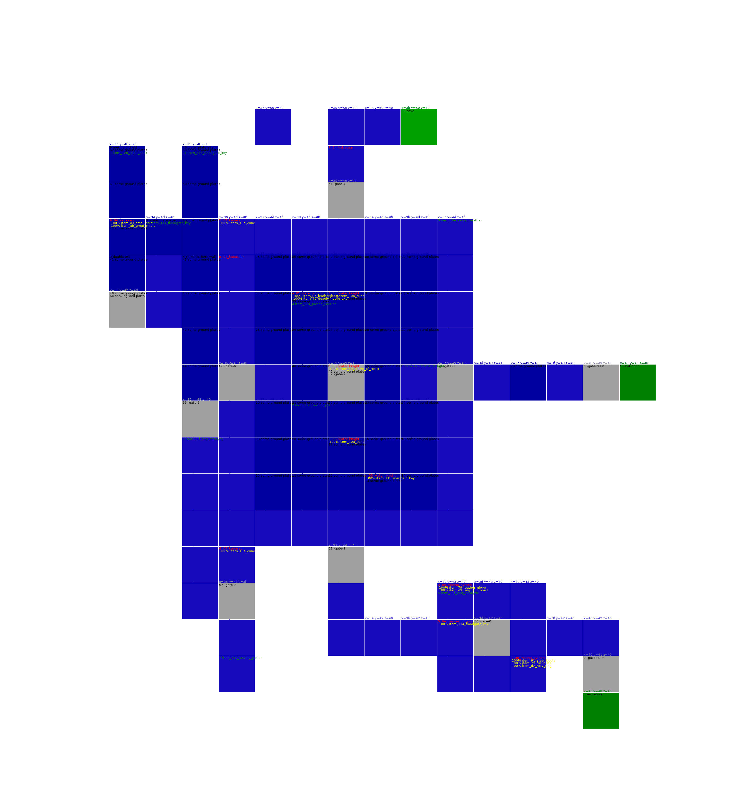
water_world_white_rain_area
Item Memory used 12
Creatures score 3
0 100% 0x30 08_dark_spider pw1 1 1 1 1 1 1 1 a1 a1 m1
100% item_10a_cune
1 100% 0x30 08_dark_spider pw1 1 1 1 1 1 1 1 a1 a1 m1
2 100% 0x30 08_dark_spider pw1 1 1 1 1 1 1 1 a1 a1 m1
3 100% 0x60 08_dark_spider pw1 1 1 1 1 1 1 1 a1 a1 m1
4 100% 0x30 08_dark_spider pw1 1 1 1 1 1 1 1 a1 a1 m1
5 100% 0x30 08_dark_spider pw1 1 1 1 1 1 1 1 a1 a1 m1
100% item_50_full_helm
100% item_27_great_sword
100% item_dc_caustic_ring
6 100% 0x30 08_dark_spider pw1 1 1 1 1 1 1 1 a1 a1 m1
100% item_10a_cune
7 100% 0x60 04_dragon_turtle pw78 90 102 30 175 69 169 87 a52 a45 m0
8 100% 0x60 04_dragon_turtle pw78 90 102 30 175 69 169 87 a52 a45 m0
9 100% 0x90 04_dragon_turtle pw78 90 102 30 175 69 169 87 a52 a45 m0
100% item_3c_crushing_axe
100% item_ae_shining_great_shield
100% item_3e_living_axe
20 100% 0x10 05_magi_magus pw80 120 108 140 155 362 600 180 a150 a170 m19
100% item_11e_anti_venom
0 item_12e_dorados_ashes
1 item_10c_torch
2 item_126_bottle_of_light
3 item_12e_dorados_ashes
4 item_c2_shinning_gothic_shield
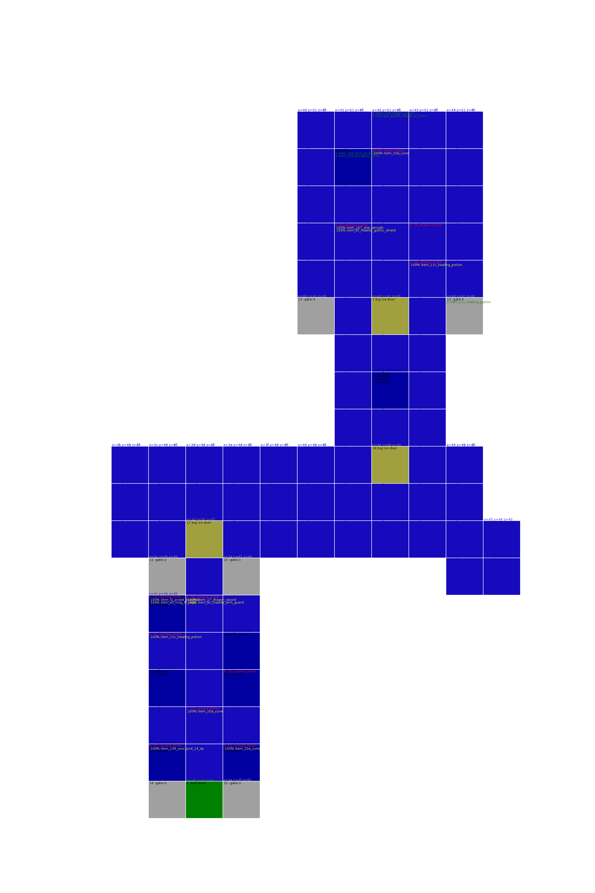
water_world_watery_labyrinth_area
Item Memory used 16
Creatures score 7
0 100% 0x30 0d_deha pw1 1 1 1 1 1 1 1 a1 a1 m1
100% item_9c_fiery_leg_guard
1 100% 0x30 08_trickster pw1 1 1 1 1 1 1 1 a1 a1 m1
100% item_10a_cune
2 100% 0x30 0d_deha pw1 1 1 1 1 1 1 1 a1 a1 m1
100% item_10a_cune
3 100% 0x30 08_trickster pw1 1 1 1 1 1 1 1 a1 a1 m1
100% item_10a_cune
4 100% 0x30 05_blood_skull pw1 1 1 1 1 1 1 1 a1 a1 m1
100% item_11c_healing_potion
5 100% 0x30 05_blood_skull pw1 1 1 1 1 1 1 1 a1 a1 m1
100% item_16_guardian_broad_sword
6 100% 0x30 05_blood_skull pw1 1 1 1 1 1 1 1 a1 a1 m1
7 100% 0x30 05_blood_skull pw1 1 1 1 1 1 1 1 a1 a1 m1
100% item_10c_torch
8 100% 0x60 0a_dweller pw1 1 1 1 1 1 1 1 a1 a1 m1
100% item_10a_cune
9 100% 0x60 0a_dweller pw1 1 1 1 1 1 1 1 a1 a1 m1
100% item_120_divine_symbol
a 100% 0x60 0a_dweller pw1 1 1 1 1 1 1 1 a1 a1 m1
100% item_11f_anti_paralytic
b 100% 0x40 09_koazul pw78 86 52 320 180 415 999 220 a38 a40 m0
c 100% 0x40 09_koazul pw78 86 52 320 180 415 999 220 a38 a40 m0
100% item_23_guardian_bastard_sword
d 100% 0x40 09_koazul pw78 86 52 320 180 415 999 220 a38 a40 m0
e 100% 0x40 09_koazul pw78 86 52 320 180 415 999 220 a38 a40 m0
100% item_11c_healing_potion
f 100% 0x40 09_koazul pw78 86 52 320 180 415 999 220 a38 a40 m0
10 100% 0x30 02_gordoral pw1 1 1 1 1 1 1 1 a1 a1 m1
100% item_a8_harden_large_shield
11 100% 0x30 02_gordoral pw1 1 1 1 1 1 1 1 a1 a1 m1
100% item_11c_healing_potion
12 100% 0x30 00_kabasaur pw1 1 1 1 1 1 1 1 a1 a1 m1
13 100% 0x30 00_kabasaur pw1 1 1 1 1 1 1 1 a1 a1 m1
100% item_d8_ring_of_poison
14 100% 0x30 00_kabasaur pw1 1 1 1 1 1 1 1 a1 a1 m1
15 100% 0x30 08_casket pw1 1 1 1 1 1 1 1 a1 a1 m1
16 100% 0x30 08_casket pw1 1 1 1 1 1 1 1 a1 a1 m1
100% item_cf_soul_ring
17 100% 0x30 04_jinn_lord pw1 1 1 1 1 1 1 1 a1 a1 m1
100% item_11c_healing_potion
18 100% 0x30 04_jinn_lord pw1 1 1 1 1 1 1 1 a1 a1 m1
19 100% 0x30 04_jinn_lord pw1 1 1 1 1 1 1 1 a1 a1 m1
1a 100% 0x30 00_kabasaur pw1 1 1 1 1 1 1 1 a1 a1 m1
100% item_10a_cune
1b 100% 0x30 00_kabasaur pw1 1 1 1 1 1 1 1 a1 a1 m1
100% item_11e_anti_venom
1c 100% 0x40 08_casket pw1 1 1 1 1 1 1 1 a1 a1 m1
100% item_6a_fiery_plate_mail
1d 100% 0x40 08_casket pw1 1 1 1 1 1 1 1 a1 a1 m1
1e 100% 0x40 08_casket pw1 1 1 1 1 1 1 1 a1 a1 m1
1f 100% 0x40 08_casket pw1 1 1 1 1 1 1 1 a1 a1 m1
0 item_10c_torch
1 item_137_soul_pod_53_sp
2 item_10c_torch
3 item_10e_sacred_feather
4 item_128_spirit_book
5 item_10a_cune
6 item_10e_sacred_feather
7 item_d4_dark_ring
8 item_136_soul_pod_5_sp
9 item_10a_cune
a item_12d_pitcher_of_nadya_mp
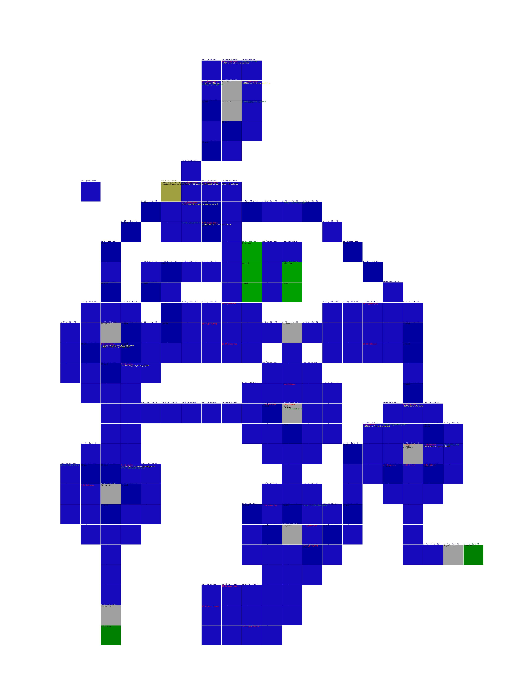
Monster World
monster_world_false_eye_area
Item Memory used 16
Creatures score 4
0 100% 0x60 06_oblid pw1 1 1 1 1 1 1 1 a1 a1 m1
1 100% 0x60 06_oblid pw1 1 1 1 1 1 1 1 a1 a1 m1
100% item_123_fire_world_stone
2 100% 0x60 06_oblid pw1 1 1 1 1 1 1 1 a1 a1 m1
100% item_4e_helm
3 100% 0x60 0a_old_face pw1 1 1 1 1 1 1 1 a1 a1 m1
100% item_80_metal_glove
4 100% 0x60 06_armored_slayer pw1 1 1 1 1 1 1 1 a1 a1 m1
100% item_fe_deadly_amulet
5 100% 0x60 06_armored_slayer pw1 1 1 1 1 1 1 1 a1 a1 m1
100% item_11c_healing_potion
6 100% 0x60 06_armored_slayer pw1 1 1 1 1 1 1 1 a1 a1 m1
100% item_55_great_helm
7 100% 0x60 06_armored_slayer pw1 1 1 1 1 1 1 1 a1 a1 m1
8 100% 0x60 06_armored_slayer pw1 1 1 1 1 1 1 1 a1 a1 m1
100% item_1e_fiery_bastard_sword
9 100% 0x60 06_armored_slayer pw1 1 1 1 1 1 1 1 a1 a1 m1
100% item_11c_healing_potion
a 100% 0x60 05_master_howler pw78 64 52 109 32 90 40 87 a40 a30 m0
b 100% 0x60 09_freak pw72 69 40 43 92 120 132 45 a78 a65 m0
100% item_10a_cune
c 100% 0x60 09_freak pw72 69 40 43 92 120 132 45 a78 a65 m0
d 100% 0x60 09_freak pw72 69 40 43 92 120 132 45 a78 a65 m0
100% item_43_warrior_bow
e 100% 0x60 09_freak pw72 69 40 43 92 120 132 45 a78 a65 m0
100% item_10a_cune
f 100% 0x60 09_freak pw72 69 40 43 92 120 132 45 a78 a65 m0
100% item_11c_healing_potion
10 100% 0x60 0a_bone_wolf pw1 1 1 1 1 1 1 1 a1 a1 m1
11 100% 0x60 05_horned_skull pw1 1 1 1 1 1 1 1 a1 a1 m1
100% item_10a_cune
12 100% 0x60 05_horned_skull pw1 1 1 1 1 1 1 1 a1 a1 m1
100% item_10e_sacred_feather
13 100% 0x60 05_horned_skull pw1 1 1 1 1 1 1 1 a1 a1 m1
100% item_10a_cune
14 100% 0x60 02_elder pw1 1 1 1 1 1 1 1 a1 a1 m1
100% item_d9_ring_of_protect
15 100% 0x60 02_elder pw1 1 1 1 1 1 1 1 a1 a1 m1
100% item_11e_anti_venom
16 100% 0x60 05_horned_slime pw1 1 1 1 1 1 1 1 a1 a1 m1
17 100% 0x60 05_horned_slime pw1 1 1 1 1 1 1 1 a1 a1 m1
18 100% 0x40 05_horned_slime pw1 1 1 1 1 1 1 1 a1 a1 m1
30 100% 0x10 02_lizard_servant pw150 150 150 150 150 150 150 150 a24 a24 m30
31 100% 0x10 06_lizard_servant pw150 150 150 150 150 150 150 150 a24 a24 m30
0 item_124_poison_vaccine
1 item_10a_cune
2 item_126_bottle_of_light
3 item_11f_anti_paralytic
4 item_10a_cune
5 item_136_soul_pod_5_sp
6 item_139_soul_pod_14_sp
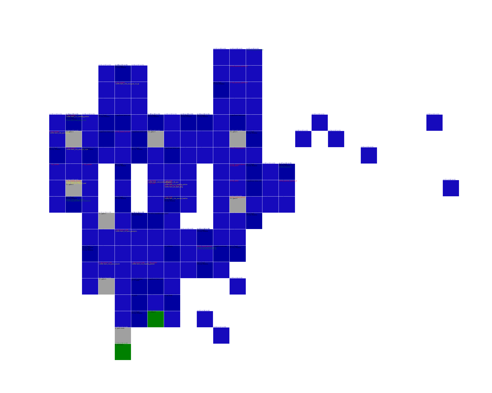
monster_world_screeching_area
Item Memory used 16
Creatures score 27
0 100% 0x14 08_berzerker pw1 1 1 1 1 1 1 1 a1 a1 m1
100% item_138_soul_pod_29_sp
1 100% 0x14 08_berzerker pw1 1 1 1 1 1 1 1 a1 a1 m1
100% item_11c_healing_potion
2 100% 0x14 08_berzerker pw1 1 1 1 1 1 1 1 a1 a1 m1
100% item_63_plate_mail
3 100% 0x40 06_dweller pw1 1 1 1 1 1 1 1 a1 a1 m1
4 100% 0x40 06_dweller pw1 1 1 1 1 1 1 1 a1 a1 m1
100% item_10a_cune
5 100% 0x50 00_sand_leech_a pw1 1 1 1 1 1 1 1 a1 a1 m1
100% item_ee_mighty_ring
100% item_98_steel_boots_of_resist
6 100% 0x90 00_sand_leech_a pw1 1 1 1 1 1 1 1 a1 a1 m1
100% item_10a_cune
7 100% 0x50 00_sand_leech_a pw1 1 1 1 1 1 1 1 a1 a1 m1
100% item_10a_cune
8 100% 0x40 02_fire_jinn pw1 1 1 1 1 1 1 1 a1 a1 m1
9 100% 0x40 02_fire_jinn pw1 1 1 1 1 1 1 1 a1 a1 m1
100% item_da_sorcerer_ring_of_poison
100% item_54_fiery_full_helm
a 100% 0x30 02_fire_jinn pw1 1 1 1 1 1 1 1 a1 a1 m1
100% item_18_bastard_sword
100% item_96_swift_steel_boots
b 100% 0x30 05_dark_spirits pw1 1 1 1 1 1 1 1 a1 a1 m1
c 100% 0x30 05_dark_spirits pw1 1 1 1 1 1 1 1 a1 a1 m1
d 100% 0x40 05_dark_spirits pw1 1 1 1 1 1 1 1 a1 a1 m1
100% item_11e_anti_venom
e 100% 0x40 05_dark_spirits pw1 1 1 1 1 1 1 1 a1 a1 m1
100% item_73_full_plate
100% item_9d_frosty_leg_guard
f 100% 0x40 0c_death_mage pw1 1 1 1 1 1 1 1 a1 a1 m1
100% item_d7_ring_of_poison
100% item_3b_giant_axe
10 100% 0x40 0c_death_mage pw1 1 1 1 1 1 1 1 a1 a1 m1
11 100% 0x40 0c_death_mage pw1 1 1 1 1 1 1 1 a1 a1 m1
100% item_44_bow_gun
100% item_100_amulet_of_curing
21 100% 0x10 0e_necron pw75 78 132 360 405 146 525 239 a85 a90 m22
100% item_dd_caustic_priest_ring
30 100% 0x10 01_auriel_c pw250 250 250 520 490 580 590 370 a90 a110 m21
100% item_11c_healing_potion
0 item_127_acid_vaccine
1 item_77_plate_mail_of_rage
2 item_136_soul_pod_5_sp
1c item_11c_healing_potion
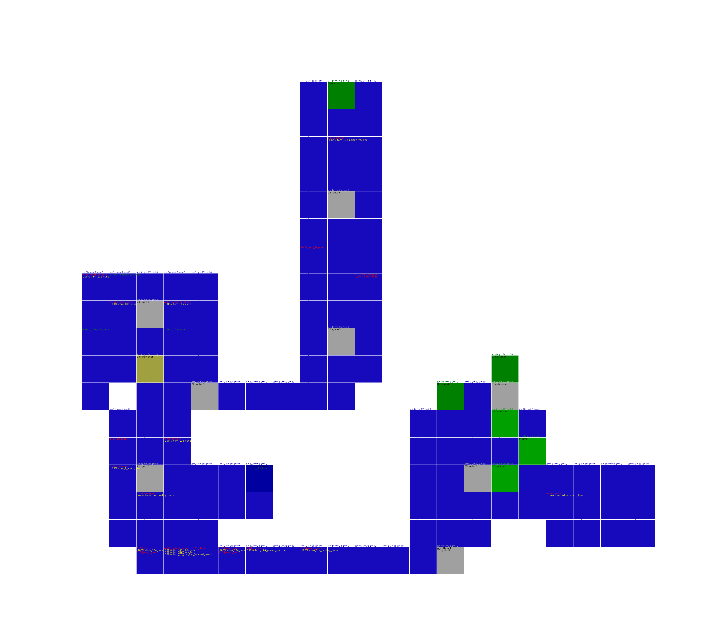
Illusion World
illusion_world_gloomy_domain
Item Memory used 13
Creatures score 9
0 100% 0x30 09_dark_fairy pw55 75 32 10 330 600 312 88 a20 a24 m0
1 100% 0x30 09_dark_fairy pw55 75 32 10 330 600 312 88 a20 a24 m0
100% item_10a_cune
2 100% 0x30 09_dark_fairy pw55 75 32 10 330 600 312 88 a20 a24 m0
100% item_10a_cune
3 100% 0x30 04_dark_spirits pw1 1 1 1 1 1 1 1 a1 a1 m1
100% item_10a_cune
4 100% 0x30 04_dark_spirits pw1 1 1 1 1 1 1 1 a1 a1 m1
100% item_10a_cune
5 100% 0x30 04_dark_spirits pw1 1 1 1 1 1 1 1 a1 a1 m1
100% item_10a_cune
6 100% 0x40 09_dark_fairy pw55 75 32 10 330 600 312 88 a20 a24 m0
7 100% 0x40 09_dark_fairy pw55 75 32 10 330 600 312 88 a20 a24 m0
8 100% 0x40 09_dark_fairy pw55 75 32 10 330 600 312 88 a20 a24 m0
100% item_10a_cune
9 100% 0x30 0c_maristella pw45 50 40 30 58 78 88 92 a20 a30 m0
a 100% 0x30 0c_maristella pw45 50 40 30 58 78 88 92 a20 a30 m0
b 100% 0x40 09_steel_servant pw1 1 1 1 1 1 1 1 a1 a1 m1
c 100% 0x40 09_steel_servant pw1 1 1 1 1 1 1 1 a1 a1 m1
100% item_e8_bracelet_of_balance
d 100% 0x40 09_steel_servant pw1 1 1 1 1 1 1 1 a1 a1 m1
100% item_11e_anti_venom
e 100% 0x40 09_steel_servant pw1 1 1 1 1 1 1 1 a1 a1 m1
100% item_2f_mighty_great_sword
100% item_bc_gothic_shield_of_resist
100% item_c1_gothic_shield_of_rage
f 100% 0x40 09_steel_servant pw1 1 1 1 1 1 1 1 a1 a1 m1
10 100% 0x30 0c_maristella pw45 50 40 30 58 78 88 92 a20 a30 m0
100% item_10a_cune
11 100% 0x30 0c_maristella pw45 50 40 30 58 78 88 92 a20 a30 m0
20 100% 0x20 02_dark_imp pw75 65 35 600 600 600 600 600 a15 a20 m0
100% item_10a_cune
21 100% 0x20 08_hermit_crab pw1 1 1 1 1 1 1 1 a1 a1 m1
22 100% 0x20 01_gargaral pw1 1 1 1 1 1 1 1 a1 a1 m1
100% item_10a_cune
23 100% 0x20 06_black_imp pw75 75 30 600 600 600 600 600 a15 a20 m0
100% item_ab_great_shield
24 100% 0x20 00_dark_spider pw1 1 1 1 1 1 1 1 a1 a1 m1
100% item_10a_cune
25 100% 0x20 06_mystic_tower pw1 1 1 1 1 1 1 1 a1 a1 m1
26 100% 0x30 0c_saurian_warrior_a pw1 1 1 1 1 1 1 1 a1 a1 m1
27 100% 0x30 0c_saurian_warrior_a pw1 1 1 1 1 1 1 1 a1 a1 m1
100% item_87_swift_gauntlet
100% item_24_dark_sword
100% item_b9_gothic_shield
28 100% 0x40 09_steel_servant pw1 1 1 1 1 1 1 1 a1 a1 m1
100% item_a7_large_shield
30 100% 0x20 0e_blank pw0 0 0 0 0 0 0 0 a0 a0 m39
2 item_124_poison_vaccine
3 item_11c_healing_potion
5 item_11c_healing_potion
6 item_11c_healing_potion
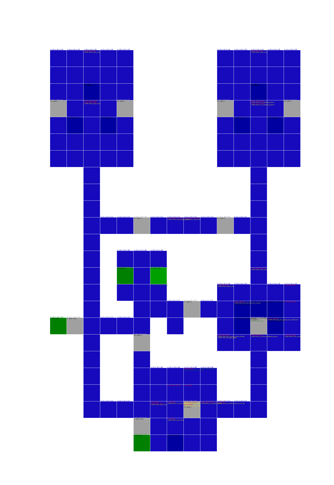
illusion_world_bewilderment_domain
Item Memory used 16
Creatures score 171
0 100% 0x20 00_master_knight pw1 1 1 1 1 1 1 1 a1 a1 m1
100% item_126_bottle_of_light
1 100% 0x20 04_kiljoy pw1 1 1 1 1 1 1 1 a1 a1 m1
100% item_12e_dorados_ashes
2 100% 0x20 04_kiljoy pw1 1 1 1 1 1 1 1 a1 a1 m1
100% item_40_deadly_battle_axe
3 100% 0x20 00_master_knight pw1 1 1 1 1 1 1 1 a1 a1 m1
100% item_10a_cune
4 100% 0x20 00_master_knight pw1 1 1 1 1 1 1 1 a1 a1 m1
100% item_df_ring_of_desire
5 100% 0x30 04_demon_warrior pw65 80 40 80 70 95 89 98 a50 a50 m0
100% item_af_dark_great_shield
6 100% 0x30 04_demon_warrior pw65 80 40 80 70 95 89 98 a50 a50 m0
7 100% 0x20 08_war_demon_1 pw1 1 1 1 1 1 1 1 a1 a1 m1
8 100% 0x20 08_war_demon_1 pw1 1 1 1 1 1 1 1 a1 a1 m1
9 100% 0x20 0a_demons_eye pw1 1 1 1 1 1 1 1 a1 a1 m1
a 100% 0x40 04_demon_warrior pw65 80 40 80 70 95 89 98 a50 a50 m0
b 100% 0x40 04_demon_warrior pw65 80 40 80 70 95 89 98 a50 a50 m0
c 100% 0x40 04_demon_warrior pw65 80 40 80 70 95 89 98 a50 a50 m0
d 100% 0x40 04_demon_warrior pw65 80 40 80 70 95 89 98 a50 a50 m0
e 100% 0x40 04_demon_warrior pw65 80 40 80 70 95 89 98 a50 a50 m0
f 100% 0x80 0a_rotting_face pw160 160 180 110 120 175 140 112 a80 a88 m0
10 100% 0x40 09_war_demon_2 pw1 1 1 1 1 1 1 1 a1 a1 m1
11 100% 0x40 09_war_demon_2 pw1 1 1 1 1 1 1 1 a1 a1 m1
12 100% 0x40 0d_crying_root pw1 1 1 1 1 1 1 1 a1 a1 m1
13 100% 0x10 0e_rotting_face pw160 160 180 110 120 175 140 112 a80 a88 m0
14 100% 0x30 04_berzerker pw1 1 1 1 1 1 1 1 a1 a1 m1
15 100% 0x60 04_berzerker pw1 1 1 1 1 1 1 1 a1 a1 m1
16 100% 0x30 04_berzerker pw1 1 1 1 1 1 1 1 a1 a1 m1
21 100% 0x40 09_war_demon_2 pw1 1 1 1 1 1 1 1 a1 a1 m1
22 100% 0x40 0d_crying_root pw1 1 1 1 1 1 1 1 a1 a1 m1
30 100% 0x10 00_gorgoral pw79 79 59 322 330 320 310 218 a0 a0 m37
0 item_76_god_plate
1 item_c0_gothic_shield_of_power
2 item_10c_torch
3 item_cc_priest_ring_of_frost
4 item_136_soul_pod_5_sp
5 item_11c_healing_potion
6 item_120_divine_symbol
7 item_10c_torch
8 item_11f_anti_paralytic
9 item_139_soul_pod_14_sp
a item_10a_cune
b item_f5_deadly_bracelet
c item_10a_cune
d item_116_key_of_delusion
e item_116_key_of_delusion
f item_116_key_of_delusion
10 item_116_key_of_delusion
11 item_11d_magic_potion
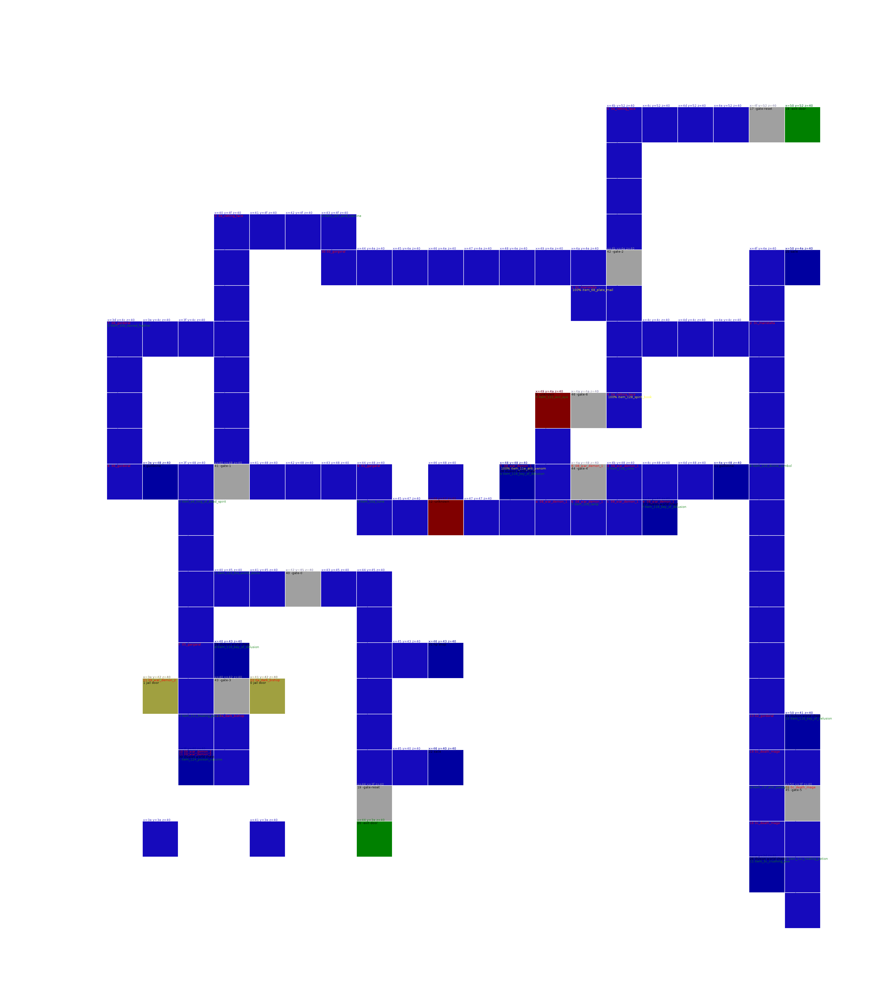
illusion_world_worship_domain
Item Memory used 10
Creatures score 3
0 100% 0x40 02_blood_slime pw1 1 1 1 1 1 1 1 a1 a1 m1
1 100% 0x40 02_blood_slime pw1 1 1 1 1 1 1 1 a1 a1 m1
2 100% 0x40 02_blood_slime pw1 1 1 1 1 1 1 1 a1 a1 m1
3 100% 0x40 02_blood_slime pw1 1 1 1 1 1 1 1 a1 a1 m1
4 100% 0x40 02_blood_slime pw1 1 1 1 1 1 1 1 a1 a1 m1
5 100% 0x30 00_black_onyx pw1 1 1 1 1 1 1 1 a1 a1 m1
100% item_11c_healing_potion
6 100% 0x30 00_black_onyx pw1 1 1 1 1 1 1 1 a1 a1 m1
100% item_d3_dark_ring
7 100% 0x30 00_black_onyx pw1 1 1 1 1 1 1 1 a1 a1 m1
8 100% 0x30 0c_ray_plant pw1 1 1 1 1 1 1 1 a1 a1 m1
9 100% 0x30 0c_ray_plant pw1 1 1 1 1 1 1 1 a1 a1 m1
100% item_124_poison_vaccine
a 100% 0x30 0c_ray_plant pw1 1 1 1 1 1 1 1 a1 a1 m1
b 100% 0x30 0c_ray_plant pw1 1 1 1 1 1 1 1 a1 a1 m1
c 100% 0x30 0c_ray_plant pw1 1 1 1 1 1 1 1 a1 a1 m1
100% item_7d_wooden_glove
d 100% 0x30 0c_ray_plant pw1 1 1 1 1 1 1 1 a1 a1 m1
e 100% 0x30 0c_ray_plant pw1 1 1 1 1 1 1 1 a1 a1 m1
100% item_9_rapier
f 100% 0x30 0c_ray_plant pw1 1 1 1 1 1 1 1 a1 a1 m1
100% item_9b_harden_leg_guard
10 100% 0x30 04_acid_slime pw1 1 1 1 1 1 1 1 a1 a1 m1
100% item_db_caustic_ring
11 100% 0x30 04_acid_slime pw1 1 1 1 1 1 1 1 a1 a1 m1
12 100% 0x30 04_acid_slime pw1 1 1 1 1 1 1 1 a1 a1 m1
100% item_29_great_sword
13 100% 0x30 04_acid_slime pw1 1 1 1 1 1 1 1 a1 a1 m1
14 100% 0x30 04_acid_slime pw1 1 1 1 1 1 1 1 a1 a1 m1
100% item_10a_cune
21 100% 0x5 04_wildowess pw66 84 55 300 112 400 98 30 a150 a170 m28
100% item_4c_devil_crown
22 100% 0x10 01_gorthaur pw85 70 50 250 60 180 50 60 a30 a36 m27
100% item_10a_cune
23 100% 0x5 08_fester pw120 56 49 559 58 579 59 60 a50 a60 m29
30 100% 0x80 02_fat_mole_d pw0 0 0 0 0 0 0 0 a0 a0 m26
100% item_10a_cune
0 item_10a_cune
1 item_11f_anti_paralytic
illusion_world_dream_domain
Item Memory used 5
Creatures score 2
0 100% 0x30 00_bone_demon pw1 1 1 1 1 1 1 1 a1 a1 m1
100% item_10a_cune
1 100% 0x30 00_bone_demon pw1 1 1 1 1 1 1 1 a1 a1 m1
100% item_10a_cune
2 100% 0x30 00_bone_demon pw1 1 1 1 1 1 1 1 a1 a1 m1
100% item_c_shadow_blade
20 100% 0x10 01_disguise pw108 82 121 370 600 240 346 230 a90 a110 m20
0 item_10d_lamp
1 item_fc_amulet_of_movement
2 item_c6_ring_of_fire_resist
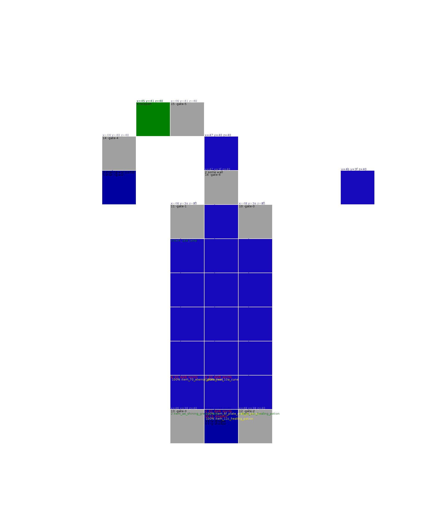
Death World
death_world_dark_castle_layer
Item Memory used 16
Creatures score 3
0 100% 0x30 04_king_hopper pw1 1 1 1 1 1 1 1 a1 a1 m1
100% item_f9_king_bracelet
1 100% 0x30 04_king_hopper pw1 1 1 1 1 1 1 1 a1 a1 m1
100% item_10c_torch
2 100% 0x30 04_king_hopper pw1 1 1 1 1 1 1 1 a1 a1 m1
100% item_11c_healing_potion
3 100% 0x80 0d_dweller pw1 1 1 1 1 1 1 1 a1 a1 m1
100% item_10a_cune
4 100% 0x10 0d_dweller pw1 1 1 1 1 1 1 1 a1 a1 m1
100% item_10a_cune
5 100% 0x30 09_blood_slime pw1 1 1 1 1 1 1 1 a1 a1 m1
100% item_bd_gothic_shield_of_honor
6 100% 0x30 09_blood_slime pw1 1 1 1 1 1 1 1 a1 a1 m1
7 100% 0x30 01_myconid pw1 1 1 1 1 1 1 1 a1 a1 m1
100% item_e6_ring_of_drain
8 100% 0x30 01_myconid pw1 1 1 1 1 1 1 1 a1 a1 m1
100% item_d1_holy_ring_of_priest
9 100% 0x30 01_myconid pw1 1 1 1 1 1 1 1 a1 a1 m1
100% item_74_plate_mail_of_honor
a 100% 0x30 01_myconid pw1 1 1 1 1 1 1 1 a1 a1 m1
100% item_11d_magic_potion
b 100% 0x30 01_myconid pw1 1 1 1 1 1 1 1 a1 a1 m1
100% item_7_fiery_long_sword
c 100% 0x30 0d_arachness pw1 1 1 1 1 1 1 1 a1 a1 m1
100% item_126_bottle_of_light
d 100% 0x30 0d_arachness pw1 1 1 1 1 1 1 1 a1 a1 m1
e 100% 0x30 0d_arachness pw1 1 1 1 1 1 1 1 a1 a1 m1
100% item_103_sorcerer_amulet
f 100% 0x30 0d_arachness pw1 1 1 1 1 1 1 1 a1 a1 m1
100% item_12e_dorados_ashes
10 100% 0x30 02_parasite pw1 1 1 1 1 1 1 1 a1 a1 m1
100% item_b5_tower_shield_of_protect
11 100% 0x30 02_parasite pw1 1 1 1 1 1 1 1 a1 a1 m1
100% item_10a_cune
12 100% 0x30 0a_armored_slayer pw60 78 67 67 74 82 70 50 a120 a90 m0
100% item_10e_sacred_feather
13 100% 0x30 0a_armored_slayer pw60 78 67 67 74 82 70 50 a120 a90 m0
14 100% 0x30 02_parasite pw1 1 1 1 1 1 1 1 a1 a1 m1
15 100% 0x30 0a_armored_slayer pw60 78 67 67 74 82 70 50 a120 a90 m0
20 100% 0x30 08_armored_guardian pw79 69 71 62 270 70 62 252 a100 a80 m36
0 item_126_bottle_of_light
1 item_136_soul_pod_5_sp
2 item_10a_cune
3 item_13_broad_sword
4 item_10a_cune
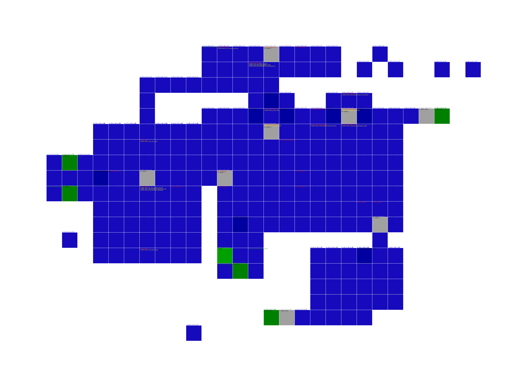
death_world_gate_of_the_dead
Item Memory used 16
Creatures score 398
0 100% 0x40 0a_horned_slime pw1 1 1 1 1 1 1 1 a1 a1 m1
100% item_7a_leather_glove
1 100% 0x40 0a_horned_slime pw1 1 1 1 1 1 1 1 a1 a1 m1
100% item_8a_arm_guard_of_composure
2 100% 0x40 02_bone_wolf pw70 30 150 80 999 90 120 52 a225 a220 m0
100% item_10a_cune
3 100% 0x40 0d_slasher pw1 1 1 1 1 1 1 1 a1 a1 m1
100% item_125_dust_of_rage
4 100% 0x40 0d_slasher pw1 1 1 1 1 1 1 1 a1 a1 m1
5 100% 0x40 0d_slasher pw1 1 1 1 1 1 1 1 a1 a1 m1
100% item_10a_cune
6 100% 0x40 05_doriwi pw70 70 69 110 120 82 92 139 a180 a200 m0
100% item_11c_healing_potion
7 100% 0x40 05_doriwi pw70 70 69 110 120 82 92 139 a180 a200 m0
100% item_30_guardian_great_sword
8 100% 0x40 05_doriwi pw70 70 69 110 120 82 92 139 a180 a200 m0
100% item_138_soul_pod_29_sp
9 100% 0x40 05_doriwi pw70 70 69 110 120 82 92 139 a180 a200 m0
100% item_124_poison_vaccine
a 100% 0x40 02_blood_brain pw1 1 1 1 1 1 1 1 a1 a1 m1
100% item_b7_tower_shield_of_balance
b 100% 0x40 02_blood_brain pw1 1 1 1 1 1 1 1 a1 a1 m1
100% item_10a_cune
c 100% 0x50 02_blood_brain pw1 1 1 1 1 1 1 1 a1 a1 m1
100% item_10a_cune
d 100% 0x40 09_dementor pw1 1 1 1 1 1 1 1 a1 a1 m1
100% item_10a_cune
e 100% 0x40 09_dementor pw1 1 1 1 1 1 1 1 a1 a1 m1
100% item_127_acid_vaccine
f 100% 0x40 09_dementor pw1 1 1 1 1 1 1 1 a1 a1 m1
100% item_e_shadow_tiger
10 100% 0x60 00_red_puppet pw1 1 1 1 1 1 1 1 a1 a1 m1
11 100% 0x60 00_red_puppet pw1 1 1 1 1 1 1 1 a1 a1 m1
100% item_aa_fiery_large_shield
12 100% 0x60 00_red_puppet pw1 1 1 1 1 1 1 1 a1 a1 m1
100% item_11f_anti_paralytic
13 100% 0x60 00_red_puppet pw1 1 1 1 1 1 1 1 a1 a1 m1
100% item_10a_cune
14 100% 0x60 00_red_puppet pw1 1 1 1 1 1 1 1 a1 a1 m1
100% item_10a_cune
20 100% 0x5 0c_hollow_mage pw81 50 181 999 999 999 999 999 a44 a144 m23
100% item_12e_dorados_ashes
0 item_e2_black_ring
1 item_10a_cune
2 item_123_fire_world_stone
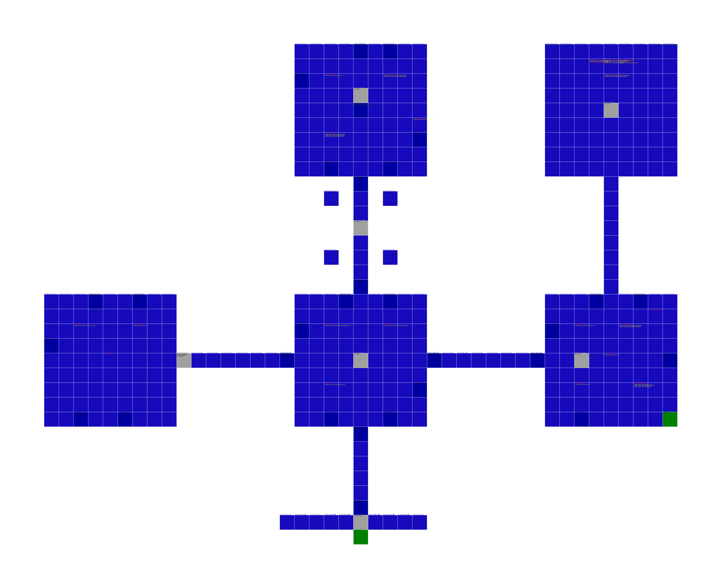
death_world_lingering_curse_layer
Item Memory used 11
Creatures score 83
0 100% 0x30 01_stack_eyes pw88 152 80 122 125 106 22 62 a60 a72 m0
100% item_11c_healing_potion
1 100% 0x30 01_stack_eyes pw88 152 80 122 125 106 22 62 a60 a72 m0
100% item_10a_cune
2 100% 0x30 01_stack_eyes pw88 152 80 122 125 106 22 62 a60 a72 m0
3 100% 0x30 01_stack_eyes pw88 152 80 122 125 106 22 62 a60 a72 m0
100% item_11e_anti_venom
4 100% 0x30 01_stack_eyes pw88 152 80 122 125 106 22 62 a60 a72 m0
100% item_10a_cune
5 100% 0x40 05_unknown_g pw60 50 70 210 126 230 110 130 a62 a92 m0
6 100% 0x40 05_unknown_g pw60 50 70 210 126 230 110 130 a62 a92 m0
7 100% 0x40 05_unknown_g pw60 50 70 210 126 230 110 130 a62 a92 m0
8 100% 0x20 08_apocrypha pw40 110 52 60 600 600 70 74 a180 a220 m0
9 100% 0x20 04_acid_skull pw1 1 1 1 1 1 1 1 a1 a1 m1
100% item_10a_cune
a 100% 0x20 08_apocrypha pw40 110 52 60 600 600 70 74 a180 a220 m0
b 100% 0x20 04_acid_skull pw1 1 1 1 1 1 1 1 a1 a1 m1
100% item_f8_holy_bracelet
c 100% 0x20 08_apocrypha pw40 110 52 60 600 600 70 74 a180 a220 m0
d 100% 0x20 04_acid_skull pw1 1 1 1 1 1 1 1 a1 a1 m1
100% item_11e_anti_venom
e 100% 0x30 0c_old_face pw50 40 50 220 210 230 200 95 a120 a110 m0
100% item_10a_cune
f 100% 0x30 0c_old_face pw50 40 50 220 210 230 200 95 a120 a110 m0
100% item_89_arm_guard
100% item_de_caustic_sorcerer_ring
100% item_eb_bracelet_of_curing
10 100% 0x30 0c_old_face pw50 40 50 220 210 230 200 95 a120 a110 m0
100% item_53_harden_full_helm
11 100% 0x30 0c_old_face pw50 40 50 220 210 230 200 95 a120 a110 m0
100% item_10a_cune
12 100% 0x30 0c_old_face pw50 40 50 220 210 230 200 95 a120 a110 m0
100% item_10a_cune
13 100% 0x30 0c_old_face pw50 40 50 220 210 230 200 95 a120 a110 m0
100% item_10a_cune
14 100% 0x30 0c_old_face pw50 40 50 220 210 230 200 95 a120 a110 m0
15 100% 0x30 0c_old_face pw50 40 50 220 210 230 200 95 a120 a110 m0
100% item_10a_cune
16 100% 0x30 0c_old_face pw50 40 50 220 210 230 200 95 a120 a110 m0
100% item_70_eternal_plate_mail
17 100% 0x30 0c_old_face pw50 40 50 220 210 230 200 95 a120 a110 m0
22 100% 0x20 0e_manna_python pw1 1 1 1 1 1 1 1 a1 a1 m1
100% item_28_great_sword
100% item_52_full_helm_of_curing
100% item_41_keenest_battle_axe
23 100% 0x20 00_kabasaur pw1 1 1 1 1 1 1 1 a1 a1 m1
30 100% 0x20 00_unknown_e pw70 62 52 100 100 100 100 100 a0 a0 m32
31 100% 0x20 04_blank pw90 90 90 90 90 90 90 90 a0 a0 m31
0 item_11c_healing_potion
1 item_2d_keenest_great_sword
2 item_11c_healing_potion
3 item_75_harden_full_plate
death_world_undead_layer
Item Memory used 16
Creatures score 83
0 100% 0x40 05_hell_hunter pw52 40 105 90 80 72 83 40 a15 a14 m0
100% item_d5_dark_priest_ring
1 100% 0x40 05_hell_hunter pw52 40 105 90 80 72 83 40 a15 a14 m0
100% item_68_plate_mail
2 100% 0x40 05_hell_hunter pw52 40 105 90 80 72 83 40 a15 a14 m0
100% item_ba_harden_gothic_shield
3 100% 0x40 05_hell_hunter pw52 40 105 90 80 72 83 40 a15 a14 m0
100% item_7e_metal_glove
4 100% 0x30 08_claw_head pw70 80 85 112 124 79 79 93 a97 a97 m0
5 100% 0x30 08_claw_head pw70 80 85 112 124 79 79 93 a97 a97 m0
6 100% 0x30 08_claw_head pw70 80 85 112 124 79 79 93 a97 a97 m0
7 100% 0x15 06_gordoral pw1 1 1 1 1 1 1 1 a1 a1 m1
8 100% 0x15 06_gordoral pw1 1 1 1 1 1 1 1 a1 a1 m1
9 100% 0x15 06_gordoral pw1 1 1 1 1 1 1 1 a1 a1 m1
a 100% 0x15 06_gordoral pw1 1 1 1 1 1 1 1 a1 a1 m1
b 100% 0x15 06_gordoral pw1 1 1 1 1 1 1 1 a1 a1 m1
c 100% 0x15 06_gordoral pw1 1 1 1 1 1 1 1 a1 a1 m1
d 100% 0x15 06_gordoral pw1 1 1 1 1 1 1 1 a1 a1 m1
e 100% 0x15 06_gordoral pw1 1 1 1 1 1 1 1 a1 a1 m1
f 100% 0x15 06_gordoral pw1 1 1 1 1 1 1 1 a1 a1 m1
10 100% 0x15 06_gordoral pw1 1 1 1 1 1 1 1 a1 a1 m1
11 100% 0x30 0e_claw_head pw68 70 59 125 46 72 72 87 a0 a0 m0
12 100% 0x30 0e_claw_head pw68 70 59 125 46 72 72 87 a0 a0 m0
13 100% 0x30 0e_claw_head pw68 70 59 125 46 72 72 87 a0 a0 m0
14 100% 0x30 0e_claw_head pw68 70 59 125 46 72 72 87 a0 a0 m0
21 100% 0x20 04_king_edward pw220 70 230 600 600 600 600 600 a154 a150 m35
30 100% 0x20 01_unknown_b pw250 250 250 520 490 580 590 370 a90 a110 m34
31 100% 0x10 09_pulsating_heart pw50 48 46 999 999 999 999 999 a0 a0 m0
32 100% 0x10 0d_fat_mole_e pw0 0 0 0 0 0 0 0 a0 a0 m33
0 item_11c_healing_potion
1 item_2b_fiery_great_sword
2 item_126_bottle_of_light
3 item_11d_magic_potion
4 item_109_endless_amulet
5 item_127_acid_vaccine
6 item_11f_anti_paralytic
7 item_125_dust_of_rage
8 item_10c_torch
9 item_11e_anti_venom
a item_59_mystic_great_helm
1c item_122_evil_eye
1d item_11f_anti_paralytic

Shadow Tower
shadow_tower_part1
Item Memory used 0
Creatures score 0

shadow_tower_part2
Item Memory used 0
Creatures score 0

shadow_tower_part3
Item Memory used 0
Creatures score 0

Void
void
Item Memory used 0
Creatures score 424
0 0% 0x20 00_balron_a pw200 220 192 471 585 596 275 246 a114 a114 m15
3 0% 0x20 03_balron_b pw110 124 122 600 388 186 346 287 a194 a194 m16
5 0% 0x20 08_demon_king pw50 70 40 65535 65535 65535 65535 65535 a0 a0 m18
30 100% 0x20 01_unknown_i pw110 120 90 71 85 96 75 46 a114 a114 m0
31 100% 0x20 02_unknown_j pw110 120 90 71 85 96 75 46 a114 a114 m0
32 0% 0x20 04_unknown_k pw0 0 0 0 0 0 0 0 a0 a0 m17